计算机网络概念速通（基于谢希仁版本）
计算机网络笔记概要
第一张 概论
计算机网络简称为网络由若干节点和连接这些节点的链路组成，网络之间的连接构成的更大的计算机的网络称为互连网
网络把许多计算机连接在一起，而互连网则把许多网络通过一些路由器连接在一起，与网络相连的计算机通常称为主机
互联网的组成十分的复杂：分为边缘部分和核心部分。
边缘部分: 由所有连接在互联网上的主机组成，这部分是用户直接使用的，用来进行通信（传送数据，音频或视频）和资源共享
核心部分：由大量网络和连接这些网络的路由器组成，这部分是为边缘部分，提供服务的（提供连通性和交换）

明确概念：当我们谈论主机A和主机B进行通信的时候，实际上指代的是运行在主机a上的某个程序和运行在主机B上的另一个程序进行通信，由于进程就是运行着的程序，因此这也就是指主机a的某个进程和主机B的另一个进程进行通信
所以这种比较严密的说法通常可以简称为：
计算机之间的通信
计算机的通信方式主要分为两大类：客户服务器方式(也就是CS方式)，和对等方式（P2P方式）
下面先介绍客户和服务器的概念：
客户：客户程序指的是被用户调用后运行在通信时主动向远地服务器发起通信，因此客户程序必须知道服务器程序的地址，同时它并不需要特殊的硬件和很复杂的操作系统
服务器：服务器程序是一种专门用来提供某种服务的程序可同时处理多个远地或本地客户的请求。
系统启动后即一直不断的运行被动的等待并接受来自各地的客户的通信请求，因此服务器程序是并不需要知道客户程序的地址的，它一般需要有强大的硬件和高级的操作系统支持
接下来介绍对等链接方式。这是指的是两台主机在进行通信的时候既可以作为客户也可以作为服务器，有一台主机可以在向其他主机请求服务的时候同时给另一部分主机提供服务。
互联网的核心部分则是保证边缘的主机都可以和其他主机互联。在网络核心部分中起到特殊作用的是路由器：它是一种专用计算机
路由器是实现分组交换的关键构件，其任务是转发收到的分组。
交换分为电路交换（想象成电话相联）和分组交换。交换本身就是意味着按照某种动态的方式动态的分配传输线路的资源。
当被叫用户听到交换机送来的振铃、摘机后，从主叫端到被叫端就建立了一条连接。也就是一条专用的物理线路。这条连接保证了双方通信时所需的通信资源，也就是说这些资源并不会被其他用户占用。随后结束，通讯资源释放。
这种必须经过建立连接（占用通信资源）、通话（一直占用通信资源）、到释放连接（归还通信资源）这三个步骤的方式叫做电路交换
分组交换则是采用存储转发技术。通常我们把要发送的整块数据称为一个报文，在发送报文之前我们会把较长的报文划分为一个个更小的等长数据段，在每一个数据段的前面加上一些必要的控制信息组成首部后，这就构成了一个分组，或者又被称为包。而分组的首部也被称为包头。
主机是为用户进行信息处理的，并且可以和其他主机通过网络交换信息。路由器则用来转发分组，即进行分组交换。
当我们讨论互联网的核心部分中的路由器转发分组的过程时，往往把单个的网络简化成一条链路，而路由器成为核心部分的节点
路由器的路由选择是依靠协议确定的
下面我们归纳三种交换的特点：
电路交换：整个报文的比特有连续的从原点到达终点，好像在一个管道中传送
报文交换：整个报文先传送到相邻节点全部存储下来，后查找转发表转发到下一个节点
分组交换：单个分组这只是整个报文的一部分，传送到相邻结点存储下来后查找转发表，转发到下一个节点
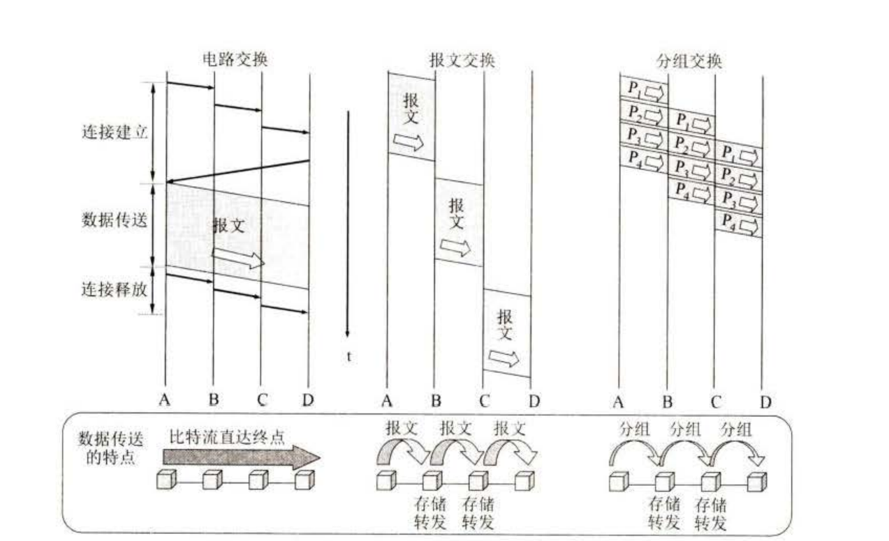
常见网络分为：WAN, MAN, LAN, PAN等，这是按照作用范围进行划分的
对于使用者：分为公用网和专用网。
评价一个网络的性能，分为：
- 速率：指代的是传送数据的速度
- 带宽：指代的是传动数据的能力
- 吞吐量：单位时间内通过的实际数据量
- 时延：数据从一段传送到另一端所采用的事件：分为发送时延：指的是主机或路由器发送数据帧所需要的时间，有时又被称为传输时延；其二是传播时：是电磁波在信道中传播一定距离所花费的时间；第三是处理时延，然后是排队时延。
- 时延带宽积：传播时延和带宽的相乘
- 往返时间RTT
- 利用率
计算机网络体系结构：网络协议主要由以下三个要素组成：
(I) 语法，即数据与控制信息的结构或格式；
(2) 语义，即盂要发出何种控制信息，完成何种动作以及做出何种响应；
(3) 同步，即事件实现顺序的详细说明。
为什么网络协议要分层呢：
- 各个层次独立
- 灵活性好
- 结构上可以分割
- 易于维护和实现
- 可以促进标准化工作
每个层次主要有以下一种或者是多种功能：
- 差错控制
- 流量控制
- 分段和重装
- 复用和分用
- 连接建立和释放
计算机网络的各层及其协议的集合就是网络的体系结构，换种说法：计算机网络的体系结构就是这个计算机网络及其构件所完成的功能的精确定义
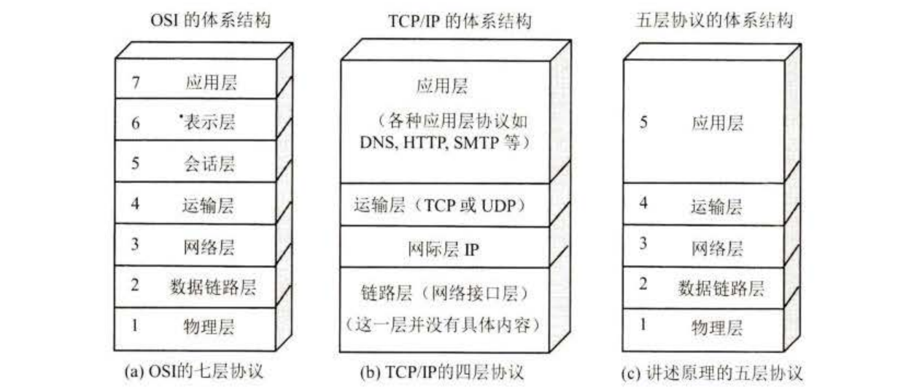
第二章 物理层
物理层考虑的是怎样才能在连接各种计算机的传输媒体上传输数据比特流，而不是指具体的传输媒体
常见的物理层的特性：
机器特性：指明接口所用接线器的形状和尺寸、引脚数目和排列、固定和锁定装
置等。平时常见的各种规格的接插件都有严格的标准化的规定。
电气特性：指明在接口电缆的各条线上出现的电压的范围。
功能特性 指明某条线某一出现的某一电平的电压的意义。
过程特性：指明对于不同功能的各种可能事件的出现顺序。
值得注意的是：计算机内部里，数据是并行传输的，但是实际上数据在通信线路的传输方式是串行传输的。
一个数据通信系统可划分为三大部分，即源系统（或发送端、发送方）、传输系统（或传输网络）和目的系统（或接收端、接收方）。
源系统一般包括以下两个部分：
源点(source) 源点设备产生要传输的数据，例如，从计算机的键盘输入汉字，计算机产生输出的数字比特流。源点又称为源站或信源。
发送器 通常源点生成的数字比特流要通过发送器编码后才能够在传输系统中进行传输。典型的发送器就是调制器。现在很多计算机使用内置的调制解调器（包含调制器和解调器），用户在计算机外面看不见调制解调器。
目的系统也一般包含下面这些部分：
接收器：接收传输系统传送过来的信号，并把它转换为能够被目的设备处理的信息。典型的接收器就是解调器，它把来自传输线路上的模拟信号进行解调，提取出在发送端置入的消息，还原出发送端产生的数字比特流。
终点：终点设备从接收器获取传送来的数字比特流，然后把估息输出（例如，把汉字在计算机屏幕上显示出来）。终点又称为目的站或信宿。
通信的目的是传送消息 。话音、文字、图像、视频等都是消息。数据运送消息的实体。信号则是数据的电气或电磁的表现。

通信的双方可以分为三种基本的方式：
单向通信：又称为单工通信，即只能有一个方向的通信而没有反方向的交互。无线电广播或有线电广播以及电视广播就屈十这种类型。
双向交替通信：又称为半双工通信，即通信的双方都可以发送信息，但不能双方同时发送（当然也就不能同时接收）。这种通信方式是一方发送另一方接收，过一段时间后可以再反过来。
双向同时通信：又称为全双工通信，即通信的双方可以同时发送和接收信息。单向通信只需要一条估道，而双向交替通信或双向同时通信则都衙要两条信道（每个方向各一条）。显然，双向同时通信的传输效率砐础。
我们有的时候需要对信号做出变换才能使得信号在信道上传输：
调制可分为两大类。
一类是仅仅对基带信号的波形进行变换，使它能够与信道特性相适应。变换后的信弓仍然是基带信号。这类调制称为基带调制．由于这种基带调制是把数字信号转换为另一种形式的数字信号，因此大家更愿总把这种过程称为编码。
另一类调制则需要使用载波进行调制，把基带信号的频率范围搬移到较高的频段，并转换为模拟信号，这样就能够更好地在桢拟信道中传输。经过载波调制后的信号称为带通信号（即仅在一段频率范围内能够通过信道），而使用载波的调制称为带通调制。
我们下面阐述的是常见的编码模式：
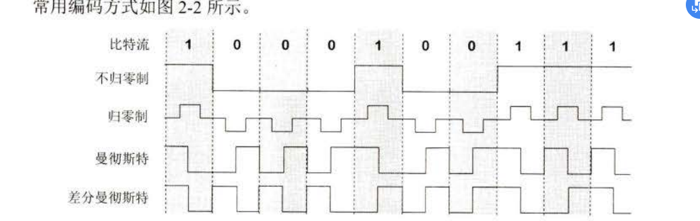
不归零制：正电平代表1，负电平代表0
归零制：正脉冲代表 1, 负脉冲代表0
曼彻斯特编码：位周期中心的向上跳变代表 0, 位周期中心的向下跳变代表1 。但也可反过来定义。
差分曼彻斯特编码：在每一位的中心处始终都有跳变。位开始边界有跳变代表 0，而位开始边界没有跳变代表1
基本的带通调制方法
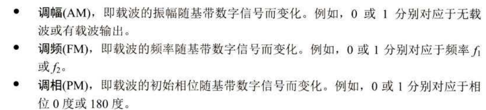
奈氏准则：在带宽为 (Hz) 的低通信道中，若不考虑噪声影响，则码元传输的最高速率是 2W （码元／秒）。传输速率超过此上限，就会出现严重的码间串扰的问题，使接收端对码元的判决（即识别）成为不可能。
香农公式：信道的极限信息传输速率C：
信道的带宽或信道中的信噪比越大，信息的极限传输速率就越高。
第三章 数据链路层
数据链路层使用的信道主要有以下两种类型：
点对点信道。这种信道使用一对一的点对点通信方式。
广播信道。这种信道使用一对多的广播通信方式，因此过程比较复杂。广播信道上连接的主机很多，因此必须使用专用的共享信道协议来协调这些主机的数据发送。
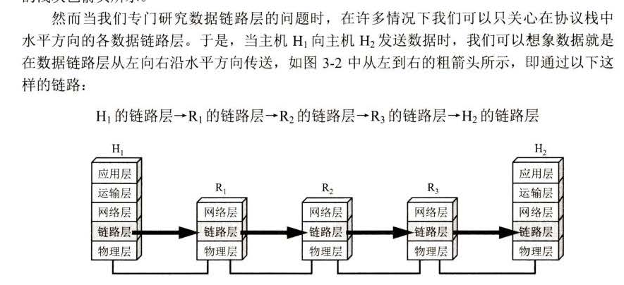
所谓链路(link)就是从一个节点到相邻节点的一段物理线路（有线或无线），而中间没有任何其他的交换节点
数据链路(data link) 则是另一个概念。这是因为当需要在一条线路上传送数据时，除了
必须有一条物理线路外，还必须有一些必要的通信协议来控制这些数据的传输。
常见的实现就是网络适配器。
介绍点对点信道的数据链路层的协议数据单元一帧。数据链路层把网络层交下来的数据构成帧发送到链路上，以及把接收到的帧中的数据取出并上交给网络层。在互联网中，网络层协议数据单元就是 IP 数据报（或简称为数据报、分组或包）。
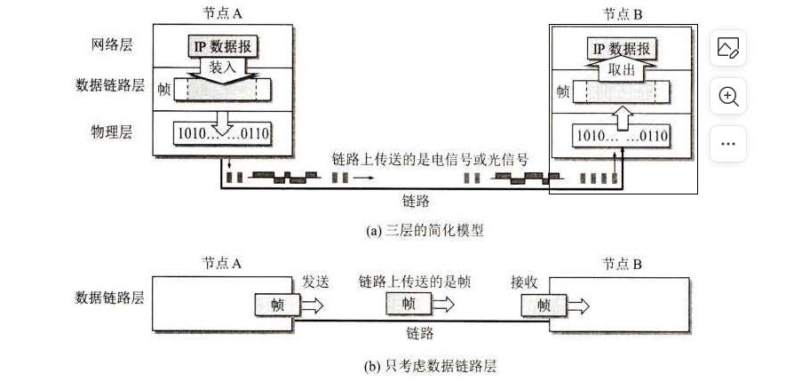
数据链路层协议有许多种，但有三个基本问题则是共同的。这三个基本问题是：封装成帧，透明传输和差错检测。
封装成帧(framing)就是在一段数据的前后分别添加首部和尾部，这样就构成了一个帧。首部和尾部的一个重要作用就是进行帧定界（即确定帧的界限），每一种链路层协议都规定了所能传送的帧的数据部分长度上限——最大传送单元 MTU (Maximum Transfer Unit)
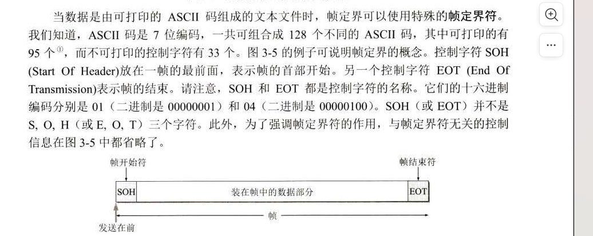
由千帧的开始和结束的标记使用专门指明的控制字符，因此，所传输的数据中的任何特的组合一定不允许和用作帧定界的控制字符的比特编码—样，否则就会出现帧定界的错误。
为了解决透明传输问题，就必须设法使数据中可能出现的控制字符 “SOH” “EOT”在接收端不被解释为控制字符。具体的方法是：发送端的数据链路层在数据中出现控制字符“SOH” “EOT” 的前面插入一个转义字符 “ESC” （其十六进制编码是 IB, 二进制是00011011 。而在接收端的数据链路层在把数据送往网络层之前删除这个插入的转义字符。这种方法称为字节填充或字符填充。如果转义字符也出现在数据当中，那么解决方法仍然是在转义字符的前面插入一个转义字符。因此，当接收端收到连续的两个转义字符时，就删除其中前面的一个。
现实的通信链路都不会是理想的。这就是说，比特在传输过程中可能会产生差错：能会变成 0, 也可能变成1。这就叫作比特差错。在一段时间内，传输错误的比特占所传输比特总数的比率称为误码率 BER (Bit Error Rate) 。因此，必须采用各种差错检测措施。目前在数据链路层广泛使用了循环冗余检验 CRC (Cyclic Redundancy Check) 的检错技术。
强调一下，在数据链路层若仅仅使用循环冗余检验 CRC 差错检测技术，则只能做到对帧的无差错接受，即：“凡是接收端数据链路层接受的帧，我们都能以非常接近于的概率认为这些帧在传输过程中没有产生差错＂。接收端丢弃的帧虽然曾收到了，但砓终还是因为有差错被丢弃，即没有被接受。以上所述的可以近似地表述为（通常都是这样认为）：“凡是接收端数据链路层接受的帧均无差错”。
PPP 协议应满足的需求：
(1) 简单
这种数据链路层的协议非常简单：接收方每收到一个帧，就进行 CRC 检验。如CRC 检验正确，就收下这个帧；反之，就丢弃这个帧，其他什么也不做。
(2) 封装成帧
PPP 协议必须规定特殊的字符作为帧定界符（即标志一个帧的开始和结束的字符），以便使接收端从收到的比特流中能准确地找出帧的开始和结束位置。
(3) 透明性
PPP 协议必须保证数据传输的透明性。这就是说，如果数据中碰巧出现了和帧定界符一样的比特组合时，就要采取有效的措施来解决这个问题（见 3.2.2 节）。
(4) 多种网络层协议
PPP 协议必须能够在同一条物理链路上同时支持多种网络层协议（如 IP IPX 等）的运行。当点对点链路所连接的是局域网或路由器时， PPP 协议必须同时支持在链路所连接的局域网或路由器上运行的各种网络层协议。
(5) 多种类型链路
除了要支持多种网络层的协议外， PPP 还必须能够在多种类型的链路上运行。例如，串行的（一次只发送一个比特）或并行的（一次并行地发送多个比特），同步的或异步的，低速的或高速的，电的或光的，交换的（动态的）或非交换的（静态的）点对点链路。
(6) 差错检测
PPP 协议必须能够对接收端收到的帧进行检测，并立
即丢弃有差错的帧。若在数据链路层不进行差错检测，那么已出现差错的无用帧就还要在网
络中继续向前转发，因而会白白浪费许多的网络资源。
(7) 检测连接状态
PPP 协议必须具有一种机制能够及时（不超过几分钟）自动检测出链路是否处于正常工作状态。当出现故障的链路隔了一段时间后又直新恢复正常工作时，就特别需要有这种及时检测功能。
(8) 最大传送单元
PPP 协议必须对每一种类型的点对点链路设置最大传送单元MTU 的标准默认值＇＇。这样做是为了促进各种实现之间的互操作件。如果高层协议发送的分组过长并超过 MTU 的数侦， PPP 就要丢弃这样的帧，并返回芹错。需要强调的是， MTU是数据链路层的帧可以载荷的数据部分的最大长度，而不是帧的总长度。
(9) 网络层地址协商
PPP 协议必须提供一种机制使通信的两个网络层（例如，两个IP 层）的实体能够通过协商知道或能够配置彼此的网络层地址。协商的符法应尽可能简单，并且能够在所有的估况下得出协商结果。这对拨号迕核的链路特别巫要，因为如果仅仅在链路层建立了连接而不知道对方网络层地址，则还不能够保证网络层可以传送分组。
(10) 数据压缩协商
PPP 协议必须提供一种方法来协商使用数据压缩算法。但 PPP协议并不要求将数据压缩笃法进行标准化。
PPP 协议有三个组成部分：
(1) 一个将 IP 数据报封装到串行链路的方法。 PPP 既支持异步链路（无奇偶检验的8比特数据），也支持面向比特的同步链路。 IP 数据报在 PPP 帧中就是其信息部分。这个信息部分的长度受最大传送单元 MTU 的限制。
(2) 一个用来建立、配置和测试数据链路连接的链路控制协议 LCP 。通亿的双方可协硕一些选坝。在 RFC 1661 中定义了 11 种类型的 LCP 分组。
(3) 一套网络控制协议 NCP (Ne twork Control Pro ocol)(2’ 具中的每一个协议支持不同的网络层协议，如 IP OSI 的网络层、 DECnet和 pplcTalk 等。
下面看看PPP协议的帧格式：
首部的第一个字段和尾部的第二个字段都是标志字段 (Flag),规定为 Ox7E。标志字段表示一个帧的开始或结束。因此标志字段就是 PPP 帧的定界符。连续两帧之间只需要用一个标志字段。如果出现连续两个标志字段，就表示这是一个空帧，应当丢弃。
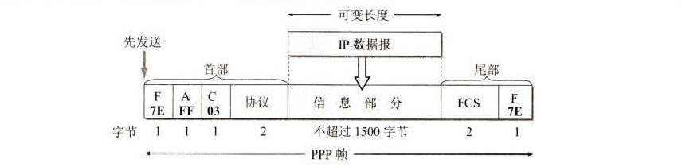
当信息字段中出现和标志字段」样的比特(Ox7E) 组合时，就必须采取一些措施使这种形式上和标志字段一样的比特组合不出现在信息字段中。
PPP 使用异步传输时，它把转义符定义为 Ox70 （即 01111101), 并使用字节填充，
(l) 把信息字段中出现的每一个 Ox7E 字节转变成为 字节序列(Ox70, Ox5E)
(2) 若信息字段中出现一个 Ox7D 的字节（即出现了和转义字符一样的比特组合），则Ox7D 转变成为 字节序列(Ox7D, Ox5D)
(3) 若信息字段中出现 ASCII 码的控制字符（即数值小千 Ox20 的字符），则在该字符前面要加入一个 Ox7D 字节，同时将该字符的编码加以改变。例如，出现 Ox03 （在控制字符中是“传输结束 “ETX) 就要把它转变为 字节序列(Ox7D, Ox23)
PPP 协议用在 SONET/SDH 链路时，使用同步传输（一连串的比特连续传送）而不是异步传输（逐个字符地传送）。在这种情况下， PPP 协议采用零比特埴充方法来实现透明传输。零比特填充的具体做法是：在发送端，先扫描整个信息字段（通常用硬件实现，但也可用软件实现，只是会慢些）。只要发现有5个连续 1, 则立即填入一个0 。因此经过这种零比特填充后的数据，就可以保证在信息字段中不会出现6个连续1 。接收端在收到一个帧时，先找到标志字段 以确定一个帧的边界，接着再用硬件对其中的比特流进行扫描。每当发现5个连续 时，就把这 个连续 1后的一个0删除，以还原成原来的信息比特流
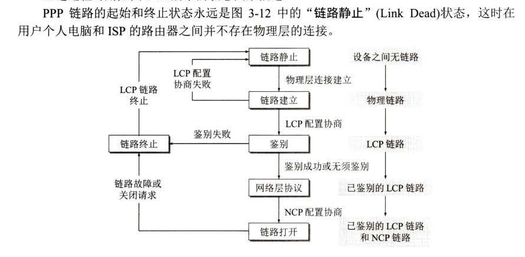
下面讨论广播信道：
局域网最主要的特点是：网络为一个单位所拥有，且地理范围和站点数目均有限。
(I) 具有广插功能，从一个站点可很方便地访问全网。局域网上的主机可共享连接在局域网上的各种硬件和软件资源。
(2) 便于系统的扩展和逐渐地演变，各设备的位置可灵活调整和改变。
(3) 提高了系统的可靠性、可用性和生存性。
计算机与外界局域网的连接是通过适配器(adapter) 。适配器本来是在主机箱内插入的一块网络接口板（或者是在笔记本电脑中插入一块 PCMClA 卡一个人计算机存储器卡接口适配器）。这种接口板又称为网络接口卡 NlC或简称为“网卡”。
为了通信的简便，以太网采取了以下两种措施：
第一，采用较为灵活的无连接的工作方式，即不必先建立连接就可以直接发送数据。适配器对发送的数据帧不进行编号，也不要求对方发回确认。这样做可以使以太网工作起来非常简单，而局域网信道的质扯很好，因通信质扭不好产生差错的概率是很小的。因此，以太网提供的服务是尽最大努力的交付，即不可靠的交付。当目的站收到有差错的数据帧时（例如，用 CRC 查出有差错），就把帧丢弃，其他什么也不做。对有差错帧是否需要重传则由高层来决定。例如，如果高层使用 TCP 协议，那么 TCP 就会发现丢失了一些数据。于是经过一定的时间后， TCP 就把这些数据重新传递给以太网进行重传。但以太网并不知道这是重传帧，而是当作新的数据帧来发送。
我们知道，总线上只要有一台计算机在发送数据，总线的传输资源就被占用。因此，在同一时间只能允许一台计算机发送数据，否则各计算机之间就会互相干扰，使得所发送数据被破坏。
以太网采用的协调方法和上面的办法非常像，它使用的协议是 CSMA/CD, 意思是载波监听多点接入／碰撞检测，以太网发送的数据都使用曼彻斯特(Manches er) 编码的信号
“多点接入”就是说明这是总线型网络，许多计算机以多点接入的方式连接在一根总
线上。协议的实质是“载波监听”和＂碰撞检测”。
“载波监听”也就是“边发送边监听”。我们知道，载波监听就是不管在想要发送数据之前，还是在发送数据之中，每个站都必须不停地检测信道。在发送前检测信道，是为了避免冲突。如果检测出已经有其他站在发送，则本站就暂时不要发送数据。在发送中检测信道，是为了及时发现如果有其他站也在发送，就立即中断本站的发送。这就称为碰撞检测。
显然，在使用 CSMA/CD 协议时，一个站不可能同时进行发送和接收（但必须边发送边监听信道）。因此使用 CSMA/CD 协议的以太网不可能进行全双工通信而只能进行双向交替通信（半双工通信）。
MAC 层的硬件地址：硬件地址又称为物理地址或 MAC 地址（因为这种地址用MAC 帧中）。
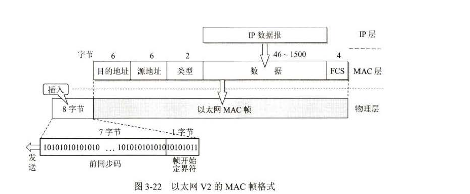
本章的重要概念
链路是从一个节点到相邻节点的一段物理线路，数据链路则是在链路的尪础上增加
了一些必要的硬件（如网络适配器）和软件（如协议的实现）。
数据链路层使用的信道主要有点对点信道和广播信道两种。
数据链路层传送的协议数据单元是帧。数据链路层的三个基本问题是：封装成帧、透明传输和差错检测。
循环冗余检验 CRC 是一种检错方法，而帧检验序列 FCS 是添加在数据后面的兀余码。
点对点协议 PPP 是数据链路层使用最多的一种协议，它的特点是：简单；只检测差错，而不是纠正差错；不使用序号，也不进行流址控制；可同时支持多种网络层协议。
PPPoE 是为宽带上网的主机使用的链路层协议。
局域网的优点是：具有广播功能，从一个站点可很方便地访问全网：便千系统的扩展和逐渐演变；提高了系统的可靠性、可用性和生存性。
共享通信媒体资源的方法有二：一是静态划分信道（各种复用技术），二是动态媒体接入控制，又称为多点接入（随机接入或受控接入）。
计算机与外界局域网的通信要通过网络适配器，它又称为网络接口卡或网 。计算机的硬件地址就在适配器的 ROM 中。
以太网采用无连接的工作方式，对发送的数据帧不进行编号，也不要求对力发回确认。目的站收到有差错帧就把它丢弃，其他什么也不做。
以太网采用的协议是具有冲突检测的载波监听多点接入 CSMA/CD 。协议的要点是：发送前先监听，边发送边监听，一旦发现总线上出现了碰撞，就立即停止发送。然后按照退避算法等待一段随机时间后再次发送。因此．每一个站在自已发送数据之后的一小段时间内，存在若遭遇碰撞的可能性。以太网上各站点都平等地争用以太网信道。
传统的总线以太网基本上都是使用栠线器的双绞线以太网。这种以太网在物理上是星形网，但在逻辑上则是总线网。集线器 仆作在物理层，它的每个端口仅仅简单地转发比特，不进行碰撞检测。
以太网的硬件地址，即 MAC 地址实际上就是适配器地址或适配器标识符，与主机所在的地点无关。源地址和目的地址都是 48 位长。
以太网的适配器有过滤功能，它只接收单播帧、广播帧或多播帧。
使用桨线器可以在物理层扩展以太网（扩展后的以太网仍然是一个网络）。交换式集线器常称为以太网交换机或第二层交换机（工作在数据链路层）。它就是一个多端 I1 的网桥， 而每个端口都直接与某台单主机或另一个集线器相连，且工作在全双工的方式。以太网交换机能同时连通许多对端口。
第四章：网络层
在路由器之间传送的信息有以下两大类：
第一类是转发源主机和目的主机之间所传送的数据，把源中机所发送的分组，像接力赛跑那样从一个路由器转发到下一个路山器，最后把分组传送到目的主机。
第二类则是传送路由信息，是根据路由选择协议所使用的路由算法，彼此不断地交换路由信息分组，目的是为了在路由器中创建路山表，并由此导出为转发分组而用的转发表。这一类信息的传送是为第一类数据的传送服务的。
我们延续分层的思想，把网络层细分成数据层面（或转发层面）和控制层面。这里所说的“层面” 和体系结构中的“层次” 很相似
下面讨论的是IP，他是网络层的协议。
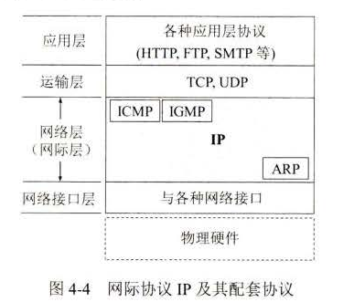
常见的中间设备有：
物理层使用转发器
数据链路层使用的是网桥或者是桥接器，以及交换器
网络层叫路由器
网络层其上叫做网关
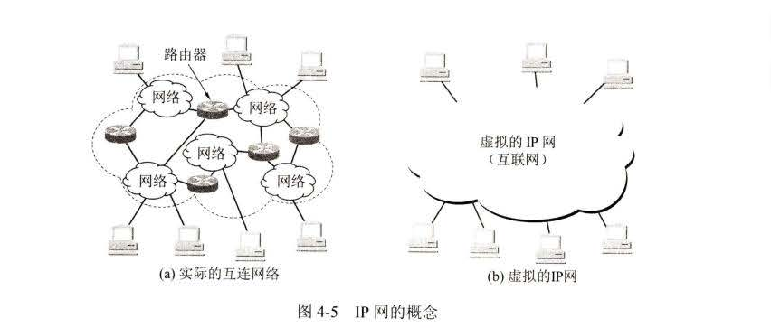
这样我们就可以发现：互联网可以由多种异构网络组成。
在互联网的词汇中，分组在传送途中的每一次转发都称为一“跳（hop)“。路由器在转发分组时也常常使用“下一跳”的说法
整个的互联网就是一个单一的、抽象的网络。我们给每一个连接互联网的主机设备分配一个接口标识符（就是IP）
IP 地址现在由互联网名字和数字分配机构 ICANN (Internet Corporation for Assigned Names and Numbers)进行分配

下面简单看看网络IP的分类，但是他已经几乎被抛弃了
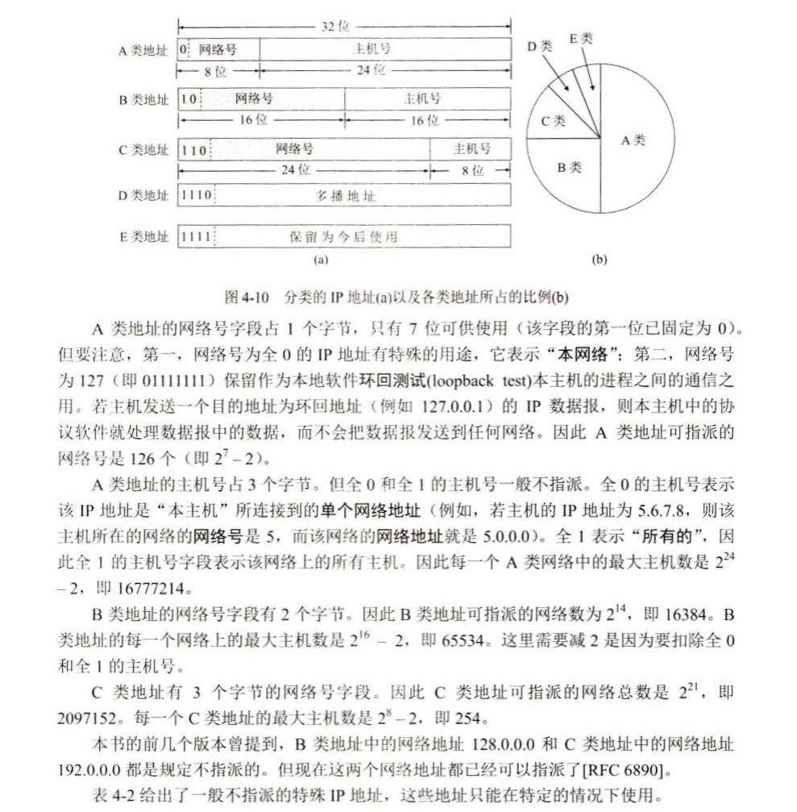
CIDR无分类编制：这种编址方法的全名是无分类域间路由选择 CIDR
(1) 网络前缀
CIDR 把图 4-9 中的网络号改称为网络前缀，用来指明网络，剩下的后面部分仍然是主机号，用来指明主机。
现在我们的网络前缀是一个可动的N位的前缀，CIDR 把网络前缀都相同的所有连续的 IP 地址组成一个 “CIDR 地址块＂。一个 CIDR地址块包含的 lP 地址数目，取决千网络前缀的位数。我们只要知道 CIDR 地址块中的任何个地址，就可以知道这个地址块的起始地址（即最小地址）和最大地址，以及地址块中的地址数。
下面谈到的是三个特殊的地址块：
前缀 n = 32, 32位lP 地址都是前缀，没有主机号。这其实就是一个 IP 地址。这个特殊地址用干主机路由。
前缀n = 31,这个地址块中只有两个 lP 地址，其主机号分别为0和1。这个地址块用于1点对点链路
前缀 n=0同时 IP 地址也是介 0, 0.0.0.0/0 。这用于默认路由
IP 地址的特点：
- IP 地址是一种分等级的地址结构。分两个等级的好处是：
- lP 地址管理机构在分配 IP 地址时只分配网络前缀（第一级），而剩下的主机号（第尸级）则由得到该网络前缀的单位自行分配。这样就方便了 IP 地址的管理；
- 第二，路由器根据目的主机所连接的网络前缀（即地址块）来转发分组（而不考虑目的主机号），这样就可以使轧发表中的项目数大幅度减少．从曲减少转发表所占的存储空间，缩短查找转发表的时间。
- 实际上 IP 地址是标志一台主机（或路山器）和～条链路的接口。当一台中机同时迕接到两个网络上时，该主机就必须同时具有两个相应的 IP 地址，其网络前缀必须是不同的。这种主机称为多归属主机。由于一个路由器全少应当连接到两个网络，因此一个路由器至少应当有两个不同的 IP 地址
- 一个网络（或子网）是指具有相同网络前缀的主机的结合，用转发器或交换机连接起来的若干个局域网仍为一个网络，因为这些局域网都具有同样的网络前缀。具有不同网络前缀的局域网必须用路由器进行互连。
- IP 地址中，所有分配到网络前缀的网络（不管是范围很小的局域网，还是可能含盖很大地理范围的广域网）都是平等的。所谓平等，是指互联网同等对待每一个IP 地址。
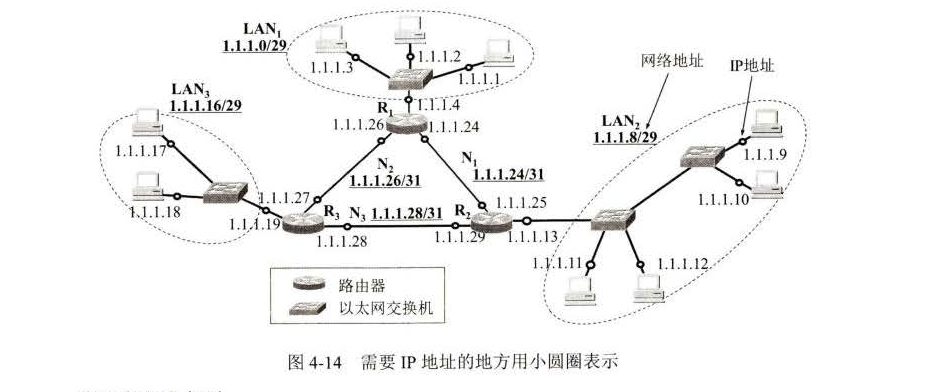
注意到：
- 在同一个局域网上的主机或路由器的 lP 地址中的网络前缀必须是同样的，即必须具有同样的网络号。
- 图中的网络地址（用粗体字加下画线表示）里面的主机号必定是全0 。
- 所有设备都有自己的 MAC 地址（都未画出）。请注意，图中以太网交换机连线上画出的小圆圈，是主机或路由器的 lP 地址，并不是以太网交换机的 IP地址。以太网交换机是链路层设备，只有 MAC 地址。
- 用以太网交换机（它只在链路层工作）连接的几个网段合起来仍然是一个局域网，只使用同样的网络前缀，例如 LAN2.
- 路由器总是具有两个或两个以上的 IP 地址。即路由器每个接口的 IP 地址的网络前缀都不同。
- 当两个路由器直接相连时（例如通过一条租用线路），在连线两端的接口处，可以分配也可以不分配 IP 地址。如分配了IP 地址，则这一段连线就构成了一种只包含一段线路的特殊“网络”（如图中的 N1, N2 N3) 。之所以叫作“网络“，是因为它有 lP 地址。这种网络仅需要两个 IP 地址，因此这里就使用了/31 地址块。这种地址块专门为点对点链路的两端使用 主机号（只有1位）可以是0或者是1。 但为了节省 IP 地址资源，对于点对点链路构成的特殊“网络＂，现在也常常不分配lP 地址。通常把这样的特殊网络叫作无编号网络或匿名网络
IP地址的MAC地址的区别：MAC地址是在出场的时候就已经固化了，我们常常称呼MAC地址是硬件地址。MAC 地址是数据链路层使用的地址，而 lP 地址是网络层和以上各层使用的地址，是一种逻辑地址
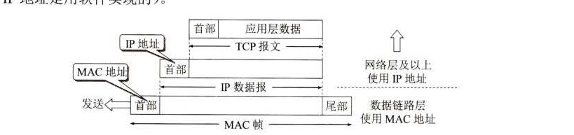
地址解析协议 ARP：已经知道了一个机器（主机或路由器）的 IP 地址，需要找出其相应的 MAC 地址。
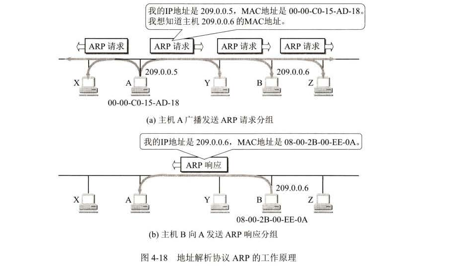
ARP 用于解决同一个局域网上的主机或路由器的 IP 地址和 MAC 地址的映射间题。如果需要发送到其他局域网，需要知道路由器的IP地址，然后一次一次的在路由器和主机这里转换IP地址和MAC地址
(D 发送方是主机〈如 H1)，要把IP数据报发送到同一个网络上的另一台主机（如 H2）。这时 H1 发送 ARP 请求分组〈在网络 N1 上广播)，找到目的主机 H2 的 MAC 地址。
(2) 发送方是主机〈如 H1)，要把IP数据报发送到另一个网络上的一台主机（如 Hs 或Ha)。这时 HI 发送 ARP 请求分组〈在网络 NI 上广播)，找到 Ni上的一个路由器 Ri 的 MAC地址。剩下的工作由路由器 Ri来完成。R 要做的事情是下面的(3)或(4)。
（3）发送方是路由器〈如 R1)，要把 IP 数据报转发到与 R1 连接在同一个网络 N3上的主机（H3）。这时 R1发送 ARP 请求分组（在 N2 上广播)，找到目的主机 H1 的 MAC 地址。
（4） 发送方是路由器〈如 R1)，要把IP数据报转发到网络 N3 上的一台主机〈如 H4)。H4 与 R1 不是连接在同一个网络上的。这时 R1发送 ARP 请求分组〈在 N2 上广播)，找到连接在 N2 上的一个路由器 R2 的 MAC 地址。剩下的工作由这个路由器 R2来完成。
注意到为什么不直接交换MAC呢，格式不一致，需要底层进行转化
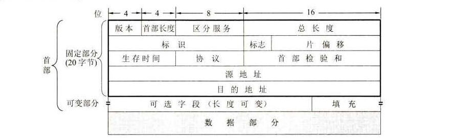
这是一个简单的IP地址各个信息字段的划分.
版本：4bits，0100 值为4代表 IPv4。
首部长度：4bits，占4位，指的是包括选项字段在内的 IP 首部长度。首部单位长度为4个 byte，以有多少组 4bytes 字组来表达 header 的长度。从0000~1111，当“首部长度”表示为0001时，首部的长度是1（4bytes）。首部最大长度为15（60bytes）。
服务类型(区分服务)：8bits，前 3bits 优先级字段（现在已经不用了），后 4bits TOS字段， 最后 1bit 备用位。4bits TOS位分别代表：第一位D（delay）最小时延、T（throughput）最大吞吐量、R（reliability）最高可靠性和C（cost）最小费用，只能设置其中 1bit，如果所有 4bits 均为0，那么就表示是一般服务。在抓包中显示Differentiated Services Field，叫差分服务，或叫区分服务。
总长度：16bits，包括首部和数据部分。能表示的最大长度为 65535（216-1）。且这个字段是必须的，当 IP 数据包小于 46bytes 时在以太网帧中数据将会被填充到 46bytes ，这时候如果没有这个字段我们接收到帧后便不能得到正确的 IP 数据包。
标识：16bits，它是一个计数器，用来产生数据报文的标识。数据报文在分片时标志会被复制到每一个分片中。
标志：3bits，第一位 0bit 保留；中间位DF（Don’t Fragment），DF=0 表示能分片，DF=1 表示不能分片。最低位为MF（More Fragment） ，MF=1 表示后面还在传输数据报的分片， MF=0 表示最后一个报文段。
(片)偏移：13bits，用于数据包分片和重组。13 位(片)偏移字段，较长的分组在分片后，某片在原来分组中的相对位置。分片偏移以 8bytes 做为计量单位，第一个分片偏移为 0。所以当 Fragment Offset 为0时，表示这个数据报文没有分片，或者第一个分片。
生存时间（TTL）：8bits，意为Time To Live，表明是数据报在网络中的寿命，单位为秒设置了数据包可以经过的最多路由器数量。
协议：8bits，协议字段指出此数据报携带的数据是使用何种协议，以便使目的主机的 IP 层知道应将数据部分上交给哪个处理过程。网络层以上的高层协议有 TCP，UDP，OSPF，EGP，IGMP，ICMP 等。
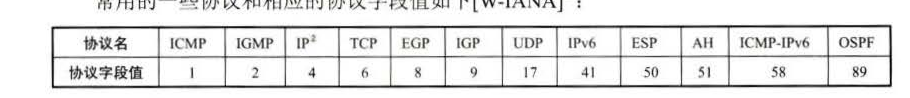
首部校验和：16bits，校验数据报的首部根据 IP 首部计算的检验和码，它不对首部后面的数据进行计算。采用的是 16bits 二进制反码求和。
源地址：32bits，源主机的 IP 地址。
目的地址：32bits，目标主机的 IP 地址。
可项字段：最多 40bytes，IP首部的可变部分就是一个选项字段，用来支持排错、测量以及安全等措施，内容很丰富。选项字段的长度可变，取决于所选择的项目。增加首部的可变部分是为了增加IP数据报的功能，但这同时也使得IP数据报的首部长度成为可变的。这就增加了每一个路由器处理数据报的开销。实际上这些选项很少被使用。
IP层转发分组的过程:
首先看基于终点的转发：分组在互联网上传送和转发是基于分组首部中的目的地址的。因此，分组每到达一个路由器，路由器就根据分组中的终点（目的地址）查找转发表，然后就得知下一跳应当到哪一个路由器。但是，由于互联网中的主机数目实在太大。如果用目的地址直接查找转发表，路由器中的转发表不能按目的IP地址来直接查出下一跳路由器。因为这种结构的转发表就会非常庞大，使得查找过程非常之慢。前面提到，32位的IP地址是由两级组成的。前一部分是前缀，表示网络；后一部分表示主机。所以可以把查找目的主机的方法变通一下，先查找目的网络（网络前缀），在找到了目的网络之后，就把分组在这个网络上直接交付目的主机。由于互联网上的网络数远远小于主机数，这样就可以大大压缩转发表的大小，加速分组在路由器中的转发。这就是基于终点的转发过程。
当路由器收到一个待转发的分组，在从转发表得出下一跳路由器的IP地址后，不是把这个地址填入分组首部，而是送交数据链路层的网络接口软件。网络接口软件负责把下一跳路由器的IP地址转换成MAC地址（必须使用ARP），并将此MAC地址放在链路层的MAC帧的首部，然后利用这个MAC地址传送到下一跳路由器的链路层，再取出MAC帧的数据部分，交给网络层。由此可见，当发送一连串的分组时，上述的这种查找转发表、调用ARP解析出MAC地址、把MAC地址写入MAC帧的首部等过程，都是必须做的。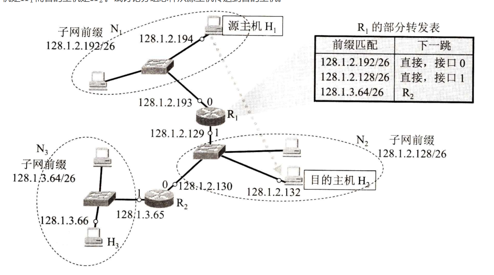
主机H1首先必须确定：目的主机是否连接在本网络上？
- 如果是，那么问题很简单，就直接交付，根本不需要利用路由器；
- 如果不是，就间接交付，把分组发送给连接在本网络上的路由器，以后要做的事情都由这个路由器来处理。
那么怎么判断是否在本网络上呢？把要发送的分组的目的地址和本网络N1的子网掩码按位进行AND运算，得出运算结果。
- 如果运算结果等于本网络N1的前缀，就表明目的主机连接在本网络上；
- 否则，就必须把分组发送到路由器R1, 由路由器R1完成后续的任务。
路由器R1的部分转发表已在上图右上方给出了。转发表中第1列就是“前缀匹配”，这是因为查找转发表的过程就是寻找前缀匹配的过程。
现在先检查路由器R 1 R_1R1的转发表中的第1行。
- 源主机H 1 H_1H1要发送的分组的目的地址是
128.1.2.132。本网络128.1.2.192/26的前缀有26位。将目的地址和子网掩码按位AND运算，很明显，AND运算结果与转发表第一行的前缀不匹配。 - 接着检查路由器R的转发表中的第2行。运算结果是
128.1.2.128/26。这个结果和转发表第2行的前缀相匹配。因此按照转发表第2行指出的，在网络N 2 N_2N2上进行分组的直接交付。这时路由器R 1 R_1R1调用ARP，解析出目的主机H 2 H_2H2的MAC地址，再封装成链路层的帧，直接交付连接在本网络N 2 N_2N2上的目的主机H 2 H_2H2。 - 如果按照同样的方法，检查路由器R 1 R_1R1的转发表中的第3行，不难得出不匹配的结果。
从以上例子可看出，查找转发表的过程就是逐行寻找前缀匹配的过程。
在采用CIDR编址时，如果一个分组在转发表中可以找到多个匹配的前缀，那么就应当选择前缀最长的一个作为匹配的前缀。这个原则称为最长前缀匹配(longest prefixmatch)。网络前缀越长，其地址块就越小，因而路由就越具体。
为了更加迅速地查找转发表，可以按照前缀的长短，把前缀最长的排在第1行，然后按前缀长短的顺序往下排列。用这种方法从第1行前缀最长的开始查找，只要检查到匹配的，就不必再继续往下查找，可以立即结束查找。
实际的转发表有时还可能增加两种特殊的路由，就是主机路由和默认路由。
- 主机路由(host route)，又叫作特定主机路由，这是对特定目的主机的IP地址专门指明的一个路由。采用特定主机路由可使网络管理人员更方便地控制网络和测试网络，同时也可在需要考虑某种安全问题时采用这种特定主机路由。在对网络的连接或转发表进行排错时，指明到某一台主机的特殊路由就十分有用。假定这个特定主机的点分十进制IP地址是a.b.c.d，那么在转发表中对应于主机路由的网络前缀就是a.b.c.d/32。实际的网络不可能使用32位的前缀，因为没有主机号的IP地址是没有实际意义的。但这个特殊的前缀却可以用在转发表中。不难看出，32个1的子网掩码和IP地址a.b.c.d 按位进行AND运算后，得出的结果必定是a.b.c.d，也就是说，找到了匹配。这时就把收到的分组转发到转发表所指出的下一跳。主机路由在转发表中都放在最前面。
- 还有一种特殊路由是默认路由(default route)。这就是不管分组的最终目的网络在哪里，都由指定的路由器R RR来处理。这在网络只有很少的对外连接时非常有用。在实际的转发表中，用一个特殊前缀
0.0.0.0/0来表示默认路由。这个前缀的掩码是全0（/0表示网络前缀是0位，因此掩码是32个0）。用全0的掩码和任何目的地址进行按位AND运算，结果一定是全0，即必然是和转发表中的0.0.0.0/0相匹配的。这时就按照转发表的指示，把分组送交下一跳路由器R来处理（即间接交付）。
综上所述，可归纳出分组转发算法如下（假定转发表按照前缀的长短排列，把前缀长的放在前面）:
- 从收到的分组的首部提取目的主机的IP地址D(即目的地址)。
- 若查找到有特定主机路由（目的地址为D)，就按照这条路由的下一跳转发分组；否则从转发表中下一行（也就是前缀最长的一行）开始检查，执行(3)。
- 把这一行的子网掩码与目的地址D按位进行AND运算。
- 若运算结果与本行的前缀匹配，则查找结束，按照“下一跳”所指出的进行处理（或直接交付本网络上的目的主机，或通过指定接口发送到下一跳路由器）。
- 否则，若转发表还有下一行，则对下一行进行检查，重新执行(3)。否则，执行(4)。
- 若转发表中有一个默认路由，则按照指明的接口，把分组传送到指明的默认路由器；否则，报告转发分组出错。
使用CIDR后，由于不知道目的网络的前缀，使转发表的查找过程变得更加复杂了。当转发表的项目数很大时，怎样设法缩短转发表的查找时间就成为一个非常重要的问题。
对无分类编址的转发表的最简单的查找算法就是对所有可能的前缀进行循环查找，从最长的前缀开始查找。例如，给定一个目的地址。对每一个可能的网络前缀，进行目的地址和子网掩码的按位AND运算，得出一个网络前缀，然后逐行查找转发表中的网络前缀。所找到的最长匹配就对应于要查找的路由。
这种最简单的算法的明显缺点就是查找的次数太多。最坏的情况是转发表中没有这个路由。为了进行更加有效的查找，通常是把无分类编址的转发表存放在一种层次的数据结构中，然后自上而下地按层次进行查找。这里最常用的就是二叉线索(binary trie)，它是一种特殊结构的树。IP地址中从左到右的比特值决定了从根节点逐层向下层延伸的路径，而二叉线索中的各个路径就代表转发表中存放的各个地址。
下图用一个例子来说明二叉线索的结构。图中给出了5个IP地址。为了简化二叉线索的结构，可以先找出对应于每一个IP地址的唯一前缀(unique prefix)。所谓唯一前缀就是在表中所有的IP地址中，该前缀是唯一的。这样就可以用这些唯一前缀来构造二叉线索。在进行查找时，只要能够和唯一前缀相匹配就行了。
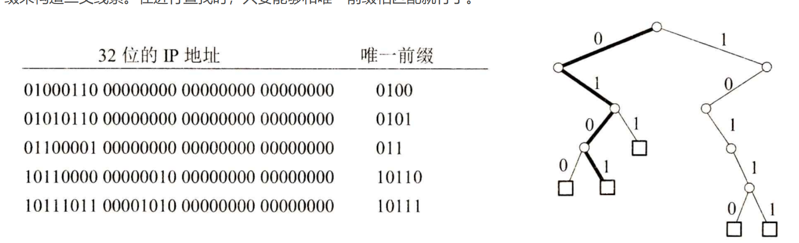
从二叉线索的根节点自顶向下的深度最多有32层，每一层对应于IP地址中的一位。一个IP地址存入二叉线索的规则很简单：
- 先检查IP地址左边的第一位，如为0，则第一层的节点就在根节点的左下方；如为 l，则在右下方。
- 然后再检查地址的第二位，构造出第二层的节点。
- 依此类推，直到唯一前缀的最后一位。
由于唯一前缀一般都小于32位，因此用唯一前缀构造的二叉线索的深度往往不到32层。图中较粗的折线就是前缀0101在这个二叉线索中的路径。二叉线索中的小圆圈是中间节点，而在路径终点的小方框是叶节点。每个叶节点代表一个唯一前缀。节点之间的连线旁边的数字表示这条边在唯一前缀中对应的比特是0或1。
显然，要将二叉线索用于转发表中，还必须使二叉线索中的每一个叶节点包含所对应的网络前缀和子网掩码。当搜索到一个叶节点时，就必须将寻找匹配的目的地址和该叶节点的子网掩码进行按位AND运算，看结果是否与对应的网络前缀相匹配。若匹配，就按下一跳的接口转发该分组。否则，就丢弃该分组。
总之，二叉线索只是提供了一种可以快速在转发表中找到匹配的叶节点的机制。但这是否和网络前缀匹配，还要和子网掩码进行一次逻辑AND运算。
为了提高二叉线索的查找速度，广泛使用了各种压缩技术。因此，只要一个地址的前n位是一样的，就可以跳过前面n位（即压缩了n个层次）而直接从第n+1位开始比较。这样就可以减少查找的时间。当然，制作经过压缩的二叉线索需要更多的计算，但由于每一次查找转发表时都可以提高查找速度，因此这样做还是值得的。
网际控制报文协议 ICMP
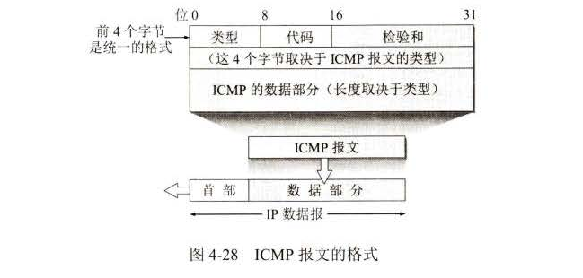
ICMP 报文有两种，即 ICMP 差错报告报文和 lCMP 询间报文。
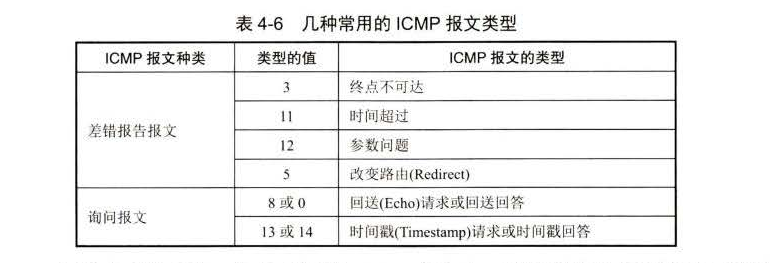
lCMP 差错报告报文共有四种，即：
(1) 终点不可达:当路由器或主机不能交付数据报时就向源点发送终点不可达报文。
(2) 时间超过: 当路由器收到生存时间为零的数据报时，除丢弃该数据报外，还要向源点发送时间超过报文。当终点在预先规定的时间内不能收到一个数据报的全部数据报片时，就把已收到的数据报片都丢弃，并向源点发送时间超过报文。
(3) 参数问题: 当路由器或目的主机收到的数据报的首部中有的字段的伯不正确时，就丢弃该数据报，并向源点发送参数问题报文。
(4) 改变路由（重定向） :路由器把改变路由报文发送给主机，让主机知道下次应将数据报发送给另外的路由器（也就是说，找到了更好的路由）。
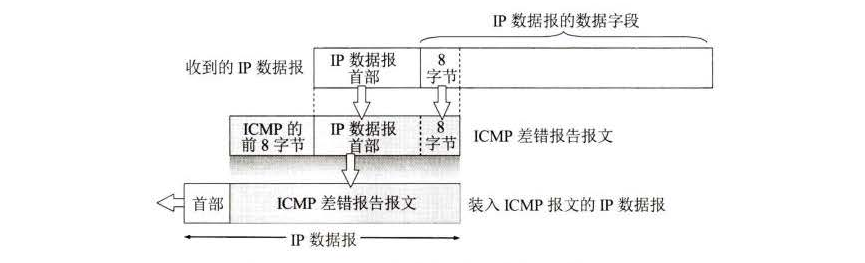
下面是不应发送 ICMP 差错报告报文的几种情况：
- ICMP 差错报告报文，不再发送 TCMP 差错报告报文。
- 对第一个分片的数据报片的所有后续数据报片，都不发送 ICMP 差错报告报文。
- 对具有多播地址的数据报，都不发送 ICMP 差错报告报文。
- 对具有特殊地址（如 127.0.0.0 0.0.0.0) 的数据报，不发送 ICMP 差错报告报文。
ICMP 的一个重要应用就是分组网间探测 PING (Packe t ln terNe t Gro er), 用来测试两台主机之间的连通性。
IPv6（Internet Protocol Version 6）是网络层协议的第二代标准协议，也被称为IPng（IP Next Generation）。它是Internet工程任务组IETF（Internet Engineering Task Force）设计的一套规范，是IPv4（Internet Protocol Version 4）的升级版本。
IPv4协议是目前广泛部署的因特网协议。在因特网发展初期，IPv4以其协议简单、易于实现、互操作性好的优势而得到快速发展。但随着因特网的迅猛发展，IPv4设计的不足也日益明显，IPv6的出现，解决了IPv4的一些弊端。相比IPv4，IPv6具有如下优势：
IPv4与IPv6的对比表：
| 问题 | IPv4的缺陷 | IPv6的优势 |
|---|---|---|
| 地址空间 | IPv4地址采用32比特标识，理论上能够提供的地址数量是43亿（由于地址分配的原因，实际可使用的数量不到43亿）。另外，IPv4地址的分配也很不均衡：美国占全球地址空间的一半左右，而欧洲则相对匮乏；亚太地区则更加匮乏。与此同时，移动IP和宽带技术的发展需要更多的IP地址。目前IPv4地址已经消耗殆尽。针对IPv4的地址短缺问题，也曾先后出现过几种解决方案。比较有代表性的是无类别域间路由CIDR（Classless Inter-Domain Routing）和网络地址转换NAT（Network Address Translator）。但是CIDR和NAT都有各自的弊端和不能解决的问题，由此推动了IPv6的发展。 | IPv6地址采用128比特标识。128位的地址结构使IPv6理论上可以拥有（43亿×43亿×43亿×43亿）个地址。近乎无限的地址空间是IPv6的最大优势。 |
| 报文格式 | IPv4报头包含可选字段Options，内容涉及Security、Timestamp、Record route等，这些Options可以将IPv4报头长度从20字节扩充到60字节。携带这些Options的IPv4报文在转发过程中往往需要中间路由转发设备进行软件处理，对于性能是个很大的消耗，因此实际中也很少使用。 | IPv6和IPv4相比，去除了IHL、Identifier、Flag、Fragment Offset、Header Checksum、 Option、Padding域，只增加了流标签域，因此IPv6报文头的处理较IPv4更为简化，提高了处理效率。另外，IPv6为了更好支持各种选项处理，提出了扩展头的概念，新增选项时不必修改现有结构，理论上可以无限扩展，体现了优异的灵活性。 |
| 自动配置和重新编址 | 由于IPv4地址只有32比特，并且地址分配不均衡，导致在网络扩容或重新部署时，经常需要重新分配IP地址，因此需要能够进行自动配置和重新编址，以减少维护工作量。目前IPv4的自动配置和重新编址机制主要依靠DHCP协议。 | IPv6协议内置支持通过地址自动配置方式使主机自动发现网络并获取IPv6地址，大大提高了内部网络的可管理性。 |
| 路由聚合 | 由于IPv4发展初期的分配规划问题，造成许多IPv4地址分配不连续，不能有效聚合路由。日益庞大的路由表耗用大量内存，对设备成本和转发效率产生影响，这一问题促使设备制造商不断升级其产品，以提高路由寻址和转发性能。 | 巨大的地址空间使得IPv6可以方便的进行层次化网络部署。层次化的网络结构可以方便的进行路由聚合，提高了路由转发效率。 |
| 对端到端的安全的支持 | IPv4协议制定时并没有仔细针对安全性进行设计，因此固有的框架结构并不能支持端到端的安全。 | IPv6中，网络层支持IPSec的认证和加密，支持端到端的安全。 |
| 对QoS（Quality of Service）的支持 | 随着网络会议、网络电话、网络电视迅速普及与使用，客户要求有更好的QoS来保障这些音视频实时转发。IPv4并没有专门的手段对QoS进行支持。 | IPv6新增了流标记域，提供QoS保证。 |
| 对移动特性的支持 | 随着Internet的发展，移动IPv4出现了一些问题，比如：三角路由，源地址过滤等。 | IPv6协议规定必须支持移动特性。和移动IPv4相比，移动IPv6使用邻居发现功能可直接实现外地网络的发现并得到转交地址，而不必使用外地代理。同时，利用路由扩展头和目的地址扩展头移动节点和对等节点之间可以直接通信，解决了移动IPv4的三角路由、源地址过滤问题，移动通信处理效率更高且对应用层透明。 |
IPv6地址总长度为128比特，通常分为8组，每组为4个十六进制数的形式，每组十六进制数间用冒号分隔。例如：FC00:0000:130F:0000:0000:09C0:876A:130B，这是IPv6地址的首选格式。
为了书写方便，IPv6还提供了压缩格式，以上述IPv6地址为例，具体压缩规则为：
- 每组中的前导“0”都可以省略，所以上述地址可写为：FC00:0:130F:0:0:9C0:876A:130B。
- 地址中包含的连续两个或多个均为0的组，可以用双冒号“::”来代替，所以上述地址又可以进一步简写为：FC00:0:130F::9C0:876A:130B。
- 需要注意的是，在一个IPv6地址中只能使用一次双冒号“::”，否则当计算机将压缩后的地址恢复成128位时，无法确定每个“::”代表0的个数。
一个IPv6地址可以分为如下两部分：
- 网络前缀：n比特，相当于IPv4地址中的网络ID
- 接口标识：128-n比特，相当于IPv4地址中的主机ID
对于IPv6单播地址来说，如果地址的前三bit不是000，则接口标识必须为64位；如果地址的前三位是000，则没有此限制。
接口标识可通过三种方法生成：手工配置、系统通过软件自动生成或IEEE EUI-64规范生成。其中，EUI-64规范自动生成最为常用。
IEEE EUI-64规范是将接口的MAC地址转换为IPv6接口标识的过程。如下图所示，MAC地址的前24位（用c表示的部分）为公司标识，后24位（用m表示的部分）为扩展标识符。从高位数，第7位是0表示了MAC地址本地唯一。转换的第一步将FFFE插入MAC地址的公司标识和扩展标识符之间，第二步将从高位数，第7位的0改为1表示此接口标识全球唯一。
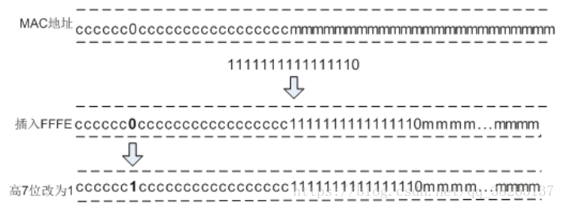
图：EUI-64规范示意图
例如：MAC地址：000E-0C82-C4D4；转换后020E:0CFF:FE82:C4D4。
这种由MAC地址产生IPv6地址接口标识的方法可以减少配置的工作量，尤其是当采用无状态地址自动配置时，只需要获取一个IPv6前缀就可以与接口标识形成IPv6地址。但是使用这种方式最大的缺点是任何人都可以通过二层MAC地址推算出三层IPv6地址。
IPv6地址分为单播地址、任播地址（Anycast Address）、组播地址三种类型。和IPv4相比，取消了广播地址类型，以更丰富的组播地址代替，同时增加了任播地址类型。
IPv6单播地址标识了一个接口，由于每个接口属于一个节点，因此每个节点的任何接口上的单播地址都可以标识这个节点。发往单播地址的报文，由此地址标识的接口接收。
IPv6定义了多种单播地址，目前常用的单播地址有：未指定地址、环回地址、全球单播地址、链路本地地址、唯一本地地址ULA（Unique Local Address）。
未指定地址
IPv6中的未指定地址即 0:0:0:0:0:0:0:0/128 或者::/128。该地址可以表示某个接口或者节点还没有IP地址，可以作为某些报文的源IP地址（例如在NS报文的重复地址检测中会出现）。源IP地址是::的报文不会被路由设备转发。
环回地址
IPv6中的环回地址即 0:0:0:0:0:0:0:1/128 或者::1/128。环回与IPv4中的127.0.0.1作用相同，主要用于设备给自己发送报文。该地址通常用来作为一个虚接口的地址（如Loopback接口）。实际发送的数据包中不能使用环回地址作为源IP地址或者目的IP地址。
全球单播地址
全球单播地址是带有全球单播前缀的IPv6地址，其作用类似于IPv4中的公网地址。这种类型的地址允许路由前缀的聚合，从而限制了全球路由表项的数量。
全球单播地址由全球路由前缀（Global routing prefix）、子网ID（Subnet ID）和接口标识（Interface ID）组成，其格式如下如所示：
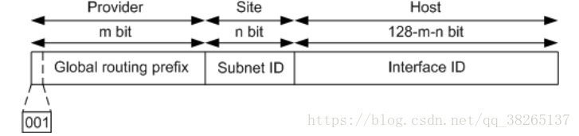
图：全球单播地址格式
Global routing prefix：全球路由前缀。由提供商（Provider）指定给一个组织机构，通常全球路由前缀至少为48位。目前已经分配的全球路由前缀的前3bit均为001。
Subnet ID：子网ID。组织机构可以用子网ID来构建本地网络（Site）。子网ID通常最多分配到第64位。子网ID和IPv4中的子网号作用相似。
Interface ID：接口标识。用来标识一个设备（Host）。
链路本地地址
链路本地地址是IPv6中的应用范围受限制的地址类型，只能在连接到同一本地链路的节点之间使用。它使用了特定的本地链路前缀FE80::/10（最高10位值为1111111010），同时将接口标识添加在后面作为地址的低64比特。
当一个节点启动IPv6协议栈时，启动时节点的每个接口会自动配置一个链路本地地址（其固定的前缀+EUI-64规则形成的接口标识）。这种机制使得两个连接到同一链路的IPv6节点不需要做任何配置就可以通信。所以链路本地地址广泛应用于邻居发现，无状态地址配置等应用。
以链路本地地址为源地址或目的地址的IPv6报文不会被路由设备转发到其他链路。链路本地地址的格式如下如所示：
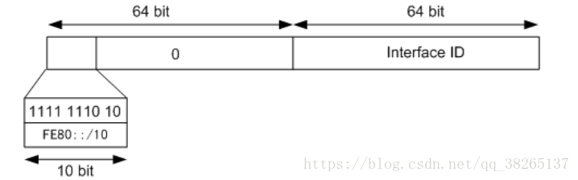
图：链路本地地址格式
唯一本地地址
唯一本地地址是另一种应用范围受限的地址，它仅能在一个站点内使用。由于本地站点地址的废除（RFC3879），唯一本地地址被用来代替本地站点地址。
唯一本地地址的作用类似于IPv4中的私网地址，任何没有申请到提供商分配的全球单播地址的组织机构都可以使用唯一本地地址。唯一本地地址只能在本地网络内部被路由转发而不会在全球网络中被路由转发。唯一本地地址格式如下如所示：
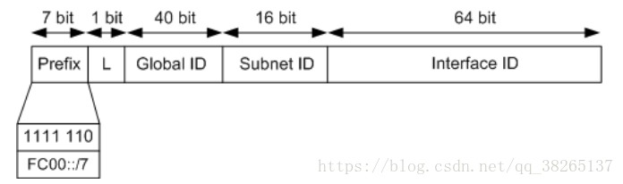
图：唯一本地地址格式
Prefix：前缀；固定为FC00::/7。
L：L标志位；值为1代表该地址为在本地网络范围内使用的地址；值为0被保留，用于以后扩展。
Global ID：全球唯一前缀；通过伪随机方式产生。
Subnet ID：子网ID；划分子网使用。
Interface ID：接口标识。
唯一本地地址具有如下特点：
- 具有全球唯一的前缀（虽然随机方式产生，但是冲突概率很低）。
- 可以进行网络之间的私有连接，而不必担心地址冲突等问题。
- 具有知名前缀（FC00::/7），方便边缘设备进行路由过滤。
- 如果出现路由泄漏，该地址不会和其他地址冲突，不会造成Internet路由冲突。
- 应用中，上层应用程序将这些地址看作全球单播地址对待。
- 独立于互联网服务提供商ISP（Internet Service Provider）。
IPv6的组播与IPv4相同，用来标识一组接口，一般这些接口属于不同的节点。一个节点可能属于0到多个组播组。发往组播地址的报文被组播地址标识的所有接口接收。例如组播地址FF02::1表示链路本地范围的所有节点，组播地址FF02::2表示链路本地范围的所有路由器。
一个IPv6组播地址由前缀，标志（Flag）字段、范围（Scope）字段以及组播组ID（Global ID）4个部分组成：
- 前缀：IPv6组播地址的前缀是FF00::/8。
- 标志字段（Flag）：长度4bit，目前只使用了最后一个比特（前三位必须置0），当该位值为0时，表示当前的组播地址是由IANA所分配的一个永久分配地址；当该值为1时，表示当前的组播地址是一个临时组播地址（非永久分配地址）。
- 范围字段（Scope）：长度4bit，用来限制组播数据流在网络中发送的范围。
- 组播组ID（Group ID）：长度112bit，用以标识组播组。目前，RFC2373并没有将所有的112位都定义成组标识，而是建议仅使用该112位的最低32位作为组播组ID，将剩余的80位都置0。这样每个组播组ID都映射到一个唯一的以太网组播MAC地址（RFC2464）。
- IPv6组播地址格式如下图:
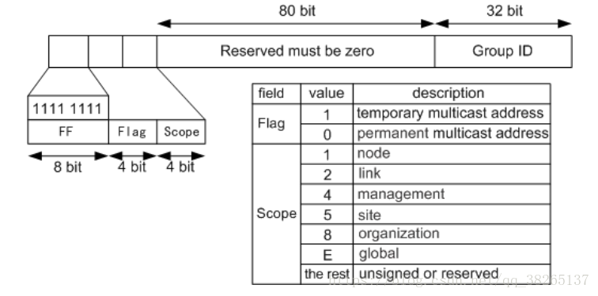
图：IPv6组播地址格式
被请求节点组播地址:
被请求节点组播地址通过节点的单播或任播地址生成。当一个节点具有了单播或任播地址，就会对应生成一个被请求节点组播地址，并且加入这个组播组。一个单播地址或任播地址对应一个被请求节点组播地址。该地址主要用于邻居发现机制和地址重复检测功能。
IPv6中没有广播地址，也不使用ARP。但是仍然需要从IP地址解析到MAC地址的功能。在IPv6中，这个功能通过邻居请求NS（Neighbor Solicitation）报文完成。当一个节点需要解析某个IPv6地址对应的MAC地址时，会发送NS报文，该报文的目的IP就是需要解析的IPv6地址对应的被请求节点组播地址；只有具有该组播地址的节点会检查处理。
被请求节点组播地址由前缀FF02::1:FF00:0/104和单播地址的最后24位组成。
任播地址标识一组网络接口（通常属于不同的节点）。目标地址是任播地址的数据包将发送给其中路由意义上最近的一个网络接口。
任播地址设计用来在给多个主机或者节点提供相同服务时提供冗余功能和负载分担功能。目前，任播地址的使用通过共享单播地址方式来完成。将一个单播地址分配给多个节点或者主机，这样在网络中如果存在多条该地址路由，当发送者发送以任播地址为目的IP的数据报文时，发送者无法控制哪台设备能够收到，这取决于整个网络中路由协议计算的结果。这种方式可以适用于一些无状态的应用，例如DNS等。
IPv6中没有为任播规定单独的地址空间，任播地址和单播地址使用相同的地址空间。目前IPv6中任播主要应用于移动IPv6。
注：IPv6任播地址仅可以被分配给路由设备，不能应用于主机。任播地址不能作为IPv6报文的源地址。
子网路由器任播地址
子网路由器任播地址是已经定义好的一种任播地址（RFC3513）。发送到子网路由器任播地址的报文会被发送到该地址标识的子网中路由意义上最近的一个设备。所有设备都必须支持子网任播地址。子网路由器任播地址用于节点需要和远端子网上所有设备中的一个（不关心具体是哪一个）通信时使用。例如，一个移动节点需要和它的“家乡”子网上的所有移动代理中的一个进行通信。
子网路由器任播地址由n bit子网前缀标识子网，其余用0填充。格式如下如所示：
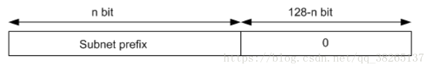
图：子网路由器任播地址
IPv6报文由IPv6基本报头、IPv6扩展报头以及上层协议数据单元三部分组成。
上层协议数据单元一般由上层协议报头和它的有效载荷构成，有效载荷可以是一个ICMPv6报文、一个TCP报文或一个UDP报文。
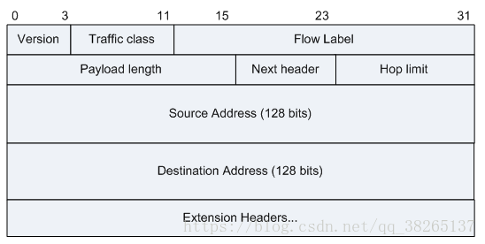
图：IPv6基本报文头部格式
IPv6报头格式中主要字段解释如下：
- Version：版本号，长度为4bit。对于IPv6，该值为6。
- Traffic Class：流类别，长度为8bit。等同于IPv4中的TOS字段，表示IPv6数据报的类或优先级，主要应用于QoS。
- Flow Label：流标签，长度为20bit。IPv6中的新增字段，用于区分实时流量，不同的流标签+源地址可以唯一确定一条数据流，中间网络设备可以根据这些信息更加高效率的区分数据流。
- Payload Length：有效载荷长度，长度为16bit。有效载荷是指紧跟IPv6报头的数据报的其它部分（即扩展报头和上层协议数据单元）。该字段只能表示最大长度为65535字节的有效载荷。如果有效载荷的长度超过这个值，该字段会置0，而有效载荷的长度用逐跳选项扩展报头中的超大有效载荷选项来表示。
- Next Header：下一个报头，长度为8bit。该字段定义紧跟在IPv6报头后面的第一个扩展报头（如果存在）的类型，或者上层协议数据单元中的协议类型。
- Hop Limit：跳数限制，长度为8bit。该字段类似于IPv4中的Time to Live字段，它定义了IP数据报所能经过的最大跳数。每经过一个设备，该数值减去1，当该字段的值为0时，数据报将被丢弃。
- Source Address：源地址，长度为128bit。表示发送方的地址。
- Destination Address：目的地址，长度为128bit。表示接收方的地址。
IPv6和IPv4相比，去除了IHL、identifiers、Flags、Fragment Offset、Header Checksum、 Options、Paddiing域，只增了流标签域，因此IPv6报文头的处理较IPv4大大简化，提高了处理效率。另外，IPv6为了更好支持各种选项处理，提出了扩展头的概念，新增选项时不必修改现有结构就能做到，理论上可以无限扩展，体现了优异的灵活性。下面为读者介绍IPv6扩展报头的一些信息。
在IPv4中，IPv4报头包含可选字段Options，内容涉及security、Timestamp、Record route等，这些Options可以将IPv4报头长度从20字节扩充到60字节。在转发过程中，处理携带这些Options的IPv4报文会占用设备很大的资源，因此实际中也很少使用。
IPv6将这些Options从IPv6基本报头中剥离，放到了扩展报头中，扩展报头被置于IPv6报头和上层协议数据单元之间。一个IPv6报文可以包含0个、1个或多个扩展报头，仅当需要设备或目的节点做某些特殊处理时，才由发送方添加一个或多个扩展头。与IPv4不同，IPv6扩展头长度任意，不受40字节限制，这样便于日后扩充新增选项，这一特征加上选项的处理方式使得IPv6选项能得以真正的利用。但是为了提高处理选项头和传输层协议的性能，扩展报头总是8字节长度的整数倍。
当使用多个扩展报头时，前面报头的Next Header字段指明下一个扩展报头的类型，这样就形成了链状的报头列表。如下图所示，IPv6基本报头中的Next Header字段指明了第一个扩展报头的类型，而第一个扩展报头中的Next Header字段指明了下一个扩展报头的类型（如果不存在，则指明上层协议的类型）。
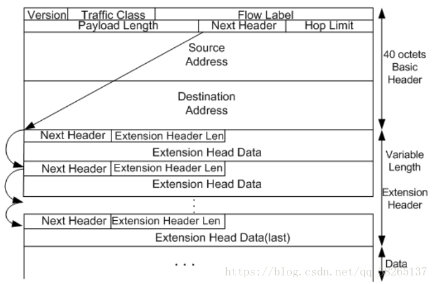
图：IPv6扩展报头格式
IPv6扩展报头中主要字段解释如下：
- Next Header：下一个报头，长度为8bit。与基本报头的Next Header的作用相同。指明下一个扩展报头（如果存在）或上层协议的类型。
- Extension Header Len：报头扩展长度，长度为8bit。表示扩展报头的长度（不包含Next Header字段）。
- Extension Head Data：扩展报头数据，长度可变。扩展报头的内容，为一系列选项字段和填充字段的组合。
目前，RFC 2460中定义了6个IPv6扩展头：逐跳选项报头、目的选项报头、路由报头、分段报头、认证报头、封装安全净载报头.
逐跳选项报头：
（代表该报头的Next Header字段值=0）
该选项主要用于为在传送路径上的每跳转发指定发送参数，传送路径上的每台中间节点都要读取并处理该字段。逐跳选项报头目前的主要应用有以下三种：
- 用于巨型载荷（载荷长度超过65535字节）。
- 用于设备提示，使设备检查该选项的信息，而不是简单的转发出去。
- 用于资源预留（RSVP）。
目的选项报头：
（代表该报头的Next Header字段值=60）
目的选项报头携带了一些只有目的节点才会处理的信息。目前，目的选项报文头主要应用于移动IPv6。
路由报头：
（代表该报头的Next Header字段值=43）
路由报头和IPv4的Loose Source and Record Route选项类似，该报头能够被IPv6源节点用来强制数据包经过特定的设备。
分段报头:
（代表该报头的Next Header字段值=44）
同IPv4一样，IPv6报文发送也受到MTU的限制。当报文长度超过MTU时就需要将报文分段发送，而在IPv6中，分段发送使用的是分段报头。
认证报头：
（代表该报头的Next Header字段值=51）
该报头由IPsec使用，提供认证、数据完整性以及重放保护。它还对IPv6基本报头中的一些字段进行保护。
封装安全净载报头：
（代表该报头的Next Header字段值=50）
该报头由IPsec使用，提供认证、数据完整性以及重放保护和IPv6数据报的保密，类似于认证报头。
当超过一种扩展报头被用在同一个分组里时，报头必须按照下列顺序出现：
- IPv6基本报头
- 逐跳选项扩展报头
- 目的选项扩展报头
- 路由扩展报头
- 分段扩展报头
- 认证扩展报头
- 封装安全有效载荷扩展报头
- 目的选项扩展报头
- 上层协议数据报文
路由设备转发时根据基本报头中Next Header值来决定是否要处理扩展头，并不是所有的扩展报头都需要被转发路由设备查看和处理的。
除了目的选项扩展报头可能出现一次或两次（一次在路由扩展报头之前，另一次在上层协议数据报文之前），其余扩展报头只能出现一次。
ICMPv6（Internet Control Message Protocol for the IPv6）是IPv6的基础协议之一。
在IPv4中，Internet控制报文协议ICMP（Internet Control Message Protocol）向源节点报告关于向目的地传输IP数据包过程中的错误和信息。它为诊断、信息和管理目的定义了一些消息，如：目的不可达、数据包超长、超时、回应请求和回应应答等。在IPv6中，ICMPv6除了提供ICMPv4常用的功能之外，还是其它一些功能的基础，如邻接点发现、无状态地址配置（包括重复地址检测）、PMTU发现等。
ICMPv6的协议类型号（即IPv6报文中的Next Header字段的值）为58。ICMPv6的报文格式下图所示：
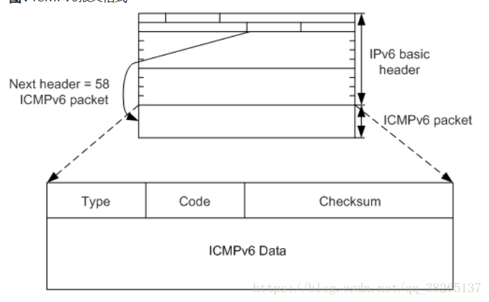
图：ICMPv6报文格式
报文中字段解释如下：
- Type：表明消息的类型，0至127表示差错报文类型，128至255表示消息报文类型。
- Code：表示此消息类型细分的类型。
- Checksum：表示ICMPv6报文的校验和。
ICMPv6错误报文用于报告在转发IPv6数据包过程中出现的错误。ICMPv6错误报文可以分为以下4种：
目的不可达错误报文
在IPv6节点转发IPv6报文过程中，当设备发现目的地址不可达时，就会向发送报文的源节点发送ICMPv6目的不可达错误报文，同时报文中会携带引起该错误报文的具体原因。
目的不可达错误报文的Type字段值为1。根据错误具体原因又可以细分为：
- Code=0：没有到达目标设备的路由。
- Code=1：与目标设备的通信被管理策略禁止。
- Code=2：未指定。
- Code=3：目的IP地址不可达。
- Code=4：目的端口不可达。
数据包过大错误报文
在IPv6节点转发IPv6报文过程中，发现报文超过出接口的链路MTU时，则向发送报文的源节点发送ICMPv6数据包过大错误报文，其中携带出接口的链路MTU值。数据包过大错误报文是Path MTU发现机制的基础。
数据包过大错误报文的Type字段值为2，Code字段值为0。
时间超时错误报文
在IPv6报文收发过程中，当设备收到Hop Limit字段值等于0的数据包，或者当设备将Hop Limit字段值减为0时，会向发送报文的源节点发送ICMPv6超时错误报文。对于分段重组报文的操作，如果超过定时时间，也会产生一个ICMPv6超时报文。
时间超时错误报文的Type字段值为3，根据错误具体原因又可以细分为：
- Code=0：在传输中超越了跳数限制。
- Code=1：分片重组超时。
参数错误报文
当目的节点收到一个IPv6报文时，会对报文进行有效性检查，如果发现问题会向报文的源节点回应一个ICMPv6参数错误差错报文。
参数错误报文的Type字段值为4，根据错误具体原因又可以细分为：
- Code=0：IPv6基本头或扩展头的某个字段有错误。
- Code=1：IPv6基本头或扩展头的NextHeader值不可识别。
- Code=2：扩展头中出现未知的选项。
回送请求报文：回送请求报文用于发送到目标节点，以使目标节点立即发回一个回送应答报文。回送请求报文的Type字段值为128，Code字段的值为0。
回送应答报文：当收到一个回送请求报文时，ICMPv6会用回送应答报文响应。回送应答报文的Type字段的值为129，Code字段的值为0。
邻居发现ND：
- Type=133 路由器请求 RS（Router Solicitation）
- Type=134 路由器公告 RA（Router Advertisement）
- Type=135 邻居请求 NS（Neighbor Solicitation）
- Type=136 邻居通告 NA（Neighbor Advertisement）
- Type=137 重定向（Redirect）
多播侦听发现协议MLD：
- Type=130 多播听众查询
- Type-131 多播听众报告
- Type=132 多播听众退出
在IPv4中，报文如果过大，必须要分片进行发送，所以在每个节点发送报文之前，设备都会根据发送接口的最大传输单元MTU（Maximum Transmission Unit）来对报文进行分片。但是在IPv6中，为了减少中间转发设备的处理压力，中间转发设备不对IPv6报文进行分片，报文的分片将在源节点进行。当中间转发设备的接口收到一个报文后，如果发现报文长度比转发接口的MTU值大，则会将其丢弃；同时将转发接口的MTU值通过ICMPv6报文的“Packet Too Big”消息发给源端主机，源端主机以该值重新发送IPv6报文，这样带来了额外流量开销。PMTU发现协议可以动态发现整条传输路径上各链路的MTU值，减少由于重传带来的额外流量开销。
PMTU协议是通过ICMPv6的Packet Too Big报文来完成的。首先源节点假设PMTU就是其出接口的MTU，发出一个试探性的报文，当转发路径上存在一个小于当前假设的PMTU时，转发设备就会向源节点发送Packet Too Big报文，并且携带自己的MTU值，此后源节点将PMTU的假设值更改为新收到的MTU值继续发送报文。如此反复，直到报文到达目的地之后，源节点就能知道到达目的地的PMTU了。
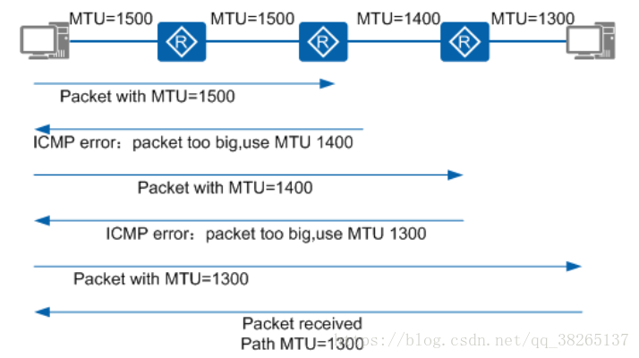
图：PMTU原理
整条传输路径需要通过4条链路，每条链路的MTU分别是1500、1500、1400、1300，当源节点发送一个分片报文的时候，首先按照PMTU为1500进行分片并发送分片报文，当到达MTU为1400的出接口时，设备返回Packet Too Big错误，同时携带MTU值为1400的信息。源节点接收到之后会将报文重新按照PMTU为1400进行分片并再次发送一个分片报文，当分片报文到达MTU值为1300的出接口时，同样返回Packet Too Big错误，携带MTU值为1300的信息。之后源节点重新按照PMTU为1300进行分片并发送分片报文，最终到达目的地，这样就找到了该路径的PMTU。
由于IPv6要求链路层所支持的最小MTU为1280，所以PMTU的值必须大于1280。建议您用1500作为链路的PMTU值。
下面了解一下互联网的路由选择协议:
则只有两大类，即静态路由选择策略和动态路由选择策略。
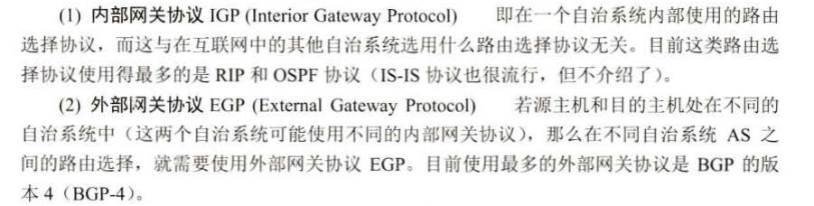
内部网关协议 RIP (Routing lnfonnation Protocol) 是内部网关协议 IGP 中最先得到广泛使用的协议[RFC 1058], 它的中文译名是路由信息协议。 RIP 是一种分布式 的基于距离向量的路由选择协议，是互联网的标准协议，其最大优点就是简单。
工作过程:
RIP使用request和response这两种报文来交互信息。
- 路由器启动时，RIP协议在接口上发送request报文，等待相邻路由器的request和response，并予以应答，当收到response时，利用距离矢量算法进行路由更新。
- 路由器周期性发送response，定期通告本地路由信息给邻居路由器。
- 一个路由器路由信息发生变化，会主动发送response给邻居路由器（使用触发更新）。
工作原理
每一个路由器都会维护一个路由表，路由表中每一项是自己到其他路由器的距离，距离即为跳数，每经过一个路由器跳数加1，RIP规定一个路由最多保存15个路由器，所以距离（metric）只能在0-16之内，16表示无限长既不可达，所以RIP只适合使用于小型网络中，大型网络多使用OSPF。
路由器只会和相邻路由器交换自己的路由表，路由表中通常包含：目的网络，距离，下一跳路由器。它们之间每隔30s就会交换一次，然后根据接收的路由表来判断是否要更新自己的路由表，若180s没有接收到交换信息，那么就判定这个相邻路由器不可达，并在路由表中将距离置为16。
经过n次的路由表交换后，每个路由器都知道自己到达当前AS内任意一个路由器的最短距离和下一跳，这个过程就叫做收敛。
三个定时器:
更新定时器：路由器每隔30s就会发送更新信息。为了防止同一时间所以的路由器发送，添加了5s的偏移，在[25，35]之间取值。
过期定时器：在180s没有收到该路由项的任何信息，就将其设为不可达。
刷新定时器：一条记录失效后不会立即删除，而是等待指定时间后删除。
路由表更新:
收到其他路由器发来的RIP报文后，执行以下步骤：
若路由表中没有对应的目的网络表项，就直接将此表项填入到路由表中。
将所有路由项都先加一，若路由表中存在对应的目的网络表项，同时下一跳相同，直接将路由表中的更新（网络可能会改变，应该使用最新的）。下一跳不相同，就会和路由器中的距离进行比较，若大于路由表中的则不做处理，若小于就执行更新。
- 若180s还没有收到邻居路由器的路由表，就将这个邻居路由表的距离设为16，不可达。
- 每隔30s就会循环这个步骤。若使用触发更新，既当跳数发送变化时，路由器就会发送response更新信息，这样可以加快收敛速度。
RIP缺点
好消息快，坏消息慢（慢收敛）
当网1出故障后，R1将其置为16，如果在最坏情况下可能要等到35秒才会将从这个坏消息发出，而在这个时间内，R2可能刚好发送之前正常情况时的路由，这时R1会误以为R2能够到达，于是就将距离加一后更新入路由表，这样R2收到时就也会误以为R1可以到达，这样一直循环直到跳数达到16时，才发现这个坏消息。
其他:
- 由于每个路由器要将自己整个路由表发送给所有相邻路由器，路由信息量大，占较大的网络开销。
- 存在路由同步，算法收敛速度慢，容易引发更新不一致。
- 可扩展性不好，只能适用于小规模网络，一条路由上最多15个路由器。
- 可产生路由环路，为避免路由环路需要特殊处理，如水平分割法，触发更新法等。
OSPF的概念
链路状态路由选择协议又被称为最短路径优先协议，它基SPF（shortest path first ）算法。他比距离矢量协议复杂的多。路由器的链路状态的信息称为链路状态，包括：接口的IP地址和子网掩码，网络类型，（如以太网链路或串行点对点链路），该链路的开销，该链路上的所有的相邻路由器。
OSPF特点
链路状态路由协议是层次式的，网络中的路由器并不向邻居传递“路由项”，而是通告给邻居一些链路状态。链路状态协议只是通告给邻居的一些链路状态。运行该路由协议的路由器不是简单地从相邻的路由器学习路由，而是把路由器分成区域，收集区域的所有的路由器的链路状态信息，根据状态信息生产网络拓扑结构，每一个路由器再根据拓扑结构计算出路由。
OSPF工作过程
- 了解直连网络
- 向邻居发送hello包（邻居指启用了相同链路状态路由协议的其他任何路由器）
- 建立链路状态数据包，
- 将链路状态数据包泛洪给邻居 路由器将其链路状态信息泛洪到路由区域内的其他所有链路状态路由器，他一旦收到来自邻居的LSP，不经过中间计算，立即将这个LSP从除接收该LSP口以外的所有接口发出，此过程在整个路由区域内的所有路由器上形成LSP的泛洪效应。LSP在路由器初始启动期间，或路由协议启动过程期间，或在每次拓扑发生更改（包括链路接通和断开）时，或是邻接关系建立，破裂时发送，并不需要定期发送。
PS：距离矢量路由协议则不同，她必须首先运行贝尔曼-福特算法来处理路由更新，然后才将他们发送至其他路由器，而链路状态协议则是再泛洪完成后在计算SPF算法，因此到达收敛的速度比距离矢量路由协议速度要快。
（5）每台路由器使用数据库建立一个完整的拓扑图并计算通向每个目的网络的最佳路径。
OSPF的网络类型
点到点连接
将一对路由器连接起来的网络，使用的是PPP HDLC协议
使用组播224.0.0.5来发送各种数据包
没有DR/BDR的选举，直接形成full邻接关系，不用手动指邻居
广播
多路访问网络，如以太网，需要DR和BDR的选举，不用手动指邻居, 通常以组播发送HELLO报文，LSU报文，和LSACK报文，以单播形式发送DD和LSR报文, DR和BDR给非指定路由器发送消息使用的是组播224.0.0.5 非指定路由器给DR和BDR发送消息使用的是组播224.0.0.6
非广播多路访问（NBMA， Non-Broadcast Multiple Access）
连接的路由器超过两台但是没有广播功能，帧中继网络和ATM网络
所有数据包均单播发送，有DR的选举，需要手动指定邻居
点到多点
Hello包以组播形式发送，其他类型数据包由单播发送
不选举DR，不用手动指邻居
OSPF报文
OSPF报头格式
OSPF直接封装在IP数据包中
OSPF数据包
Hello包
作用：建立邻居关系
各字段功能：
Network Mask ：发送数据包的源IP地址对应的子网掩码
Hellointerval：Hello时间间隔，默认10S，失效间隔默认为Hello间隔的3倍
Rtr Pri：路由器优先级用于选举DR和BDR
DR：指定路由器的IP地址，开始时为空
BDR：备份指定路由器的IP地址，开始是也为空
Neighbor：里面标识了邻居的路由器ID，可以表示多个邻居
Stub and Flag ：末节标识符
邻居关系建立条件：HELLO和失效间隔要一致，区域号要相同，区域末节标识符要相同，有认证的话，认证要相同，区域ID要相同，子网掩码要一致
DBD包（Datebase Description）
作用：在OSPF邻居关系建立之后，DBD包负责描述本地的LSDB，接收到的路由器通过和自己的LSDB做比对，进而同步区域中的LSDB
各字段功能
I：该位置1表示这是发送的第一个数据包，开启了LSDB同步过程
M：该位置1表示之后还有DD包要发送，若置0则表示没有数据包要发送了
MS：用来表示谁是主（Master）谁是从（Slave）由主路由器引导进行LSDB的同步
DD Sequence Number：利用序号来确保传输的完整性和可靠性
LSA Headers：LSA头部信息摘要，可以有多个LSA头部摘要信息
LSR包（Link-State Request）
作用：用来查询本LSDB中没有或者哪些LSA是已经失效的
各字段功能：
LS type：指定所请求的LSA类型，一共有7类
Link State ID：用来表示LSA，根据LSA种类的不同，有不同的含义
Advertising Router：用来表示产生此LSA的路由器ID
LSU（Link-State Update）
作用：对LSR进行回应，或者定时发送LSU来更新区域中的LSDB，发送的是真正需要的LSA的内容
各字段功能：
Number of LSA：指定此报文中共发送的LSA数量
LSAs：一条条具体的LSA完整的信息，可以有多个LSA的信息
LSAck
作用：用来在收到对端发送的LSU之后返回的确认报文，内容是需要确认的LSA头部
各字段功能：
LSA Headers：LSA头部信息
一个ACK可以确认多个LSA
OSPF邻居建立过程（重！）
首先对邻居关系，和邻接关系要区分开，两台路由器互相之间的状态是2-way则表明邻居关系建立，当邻居关系为FULL是表明邻接关系建立
关系变化过程
down->init->2-way->exstart->exchange->loading->full
down:表示还没有建立起邻接关系，没有检测到活动邻居
init：表示从对端收到的HELLO包中，没有自己的路由器ID信息
2-way：表示从对端收到的HELLO包中，已经有自己的路由器ID信息了，已建立邻居关系可以共享链路状态数据
exstart:表示正在确定主从关系，即谁先发送DBD
exchange：在主的带领下开始交换DBD
loading：请求更详细的信息
full：已建立完全邻接关系 完成更新过程 其数据库与邻居完全相同
过程详解
邻居建立过程（down->init->2-way）
希望建立完全OSPF邻居邻接关系的路由器之间交换OSPF HELLO包（组播224.0.0.5），双方的邻居此时都处于down状态，这是邻居会话的初始状态，当路由器从邻居收到了一个Hello包，但是没有在邻居Hello包中看到自己的路由器ID时，他将转化为INIT状态，当路由器从邻居收到Hello包中看到自己的路由器ID时，他将转为2-Way状态。表示邻居之间已经建立了双向通信
交换LSDB过程（exstart->exchange）
路由器开始准备交换彼此的LSDB，正式交换LSDB前，会选举出主/从路由器，这个阶段即为exstart状态
首先一条链路上的路由器都会认为自己是主路由器，此时将邻居视为exstart状态，发送空的DBD包（不含LSA的索引，含有RID，MS（主）标记位，M（多），1（初始）标记位都会标记为1），来比较他们的RID，RID大的将成为主路由器。被认为从路由器的那一方需要再发送一个DBD包（MS置为0，I置为0，序列号为主路由器发来的DBD中存在的序列号）来响应。这样主从关系就确定下来
随后，路由器都进入EXCHANGE状态，开始互换LSDB中的信息，这个过程总是由主路由器来引导，有以下两条规则
1.主路由器发送的DBD包，从路由器总要做出响应（主路由器发送的DBD包与从路由器发送的DBD包相同）———-如果从路由器没有LSA需要通告了，那么就会响应回空的DBD
2.从路由器发送的DBD包，只能用作对主路由器发送的DBD包的响应（从路由器无法自主的发送DBD包）———-如果主路由没有LSA需要通告了，而从路由器有LSA需要通告，那么此时从路由器发回的响应的DBD包中的M位（MORE）置为1，即告诉主路由我还有LSA要发送，这样主路由器就会继续发送DBD，直到从路由器将所有LSA都通告完（这时M位就为0了）。
路由器会将收到的DBD中的信息而自己LSDB中不存在的LSA头部加入到链路请求列表中，进入LOADING状态后会根据这个列表来发送请求信息。
同步链路状态数据库过程（Loading->Full）
这时路由器就有了邻居的LSA索引列表，路由器都将进入LOADING状态，来请求自己LSDB中还没有的LSA的信息。路由器会发送LSR来请求一个或者多个LSA的信息，对端会发送回LSU来告诉路由器他想要的信息。OSPF有以下两种机制来确认对端收到了数据包。
1.对端发送回相同的LSU，即可表明对端收到了信息
2.对端发送回LSACK表明已经收到了LSU（LSACK中带有LSA头部的信息
不再发送和接收LSU和LSR，路由器就进入了FULL状态，此时他们的LSDB是相同的，就可以进行SPF算法来计算路径了。
OSPF 邻居关系不能正常建立的原因和解决方法
接口上没有激活 ospf
物理层或者是数据链路层协议 down.
建立邻居的接口被 passive掉
OSPF的 hello 组播地址被 ACL Block
在 broadcast链路上的子网掩码不匹配
Hello/dead 间隔不匹配
认证方式或者是认证密码不匹配
使用 debug ip ospf adj 来查看,可以自己使用不同的情况来验证
两台路由器处于不同的 AREA
Stub/transit/NSSA 区域类型不匹配
DR和BDR的选举
DR，BDR存在意义
DR BDR存在于多路访问网络中，作用是减少区域内的同步次数，降低路由器的内存消耗，减少了路由流量更新，确保同一区域内的路由器拥有相同的LSDB
选举过程
选举可能出现的时刻：整个网络刚搭建好，SW开启之后，LAN因故障失效之后，DR，BDR失效之后都存在选举的过程
OSPF priority 最高者为DR（缺省所有OSPF路由器为1,通过ip ospf priority 接口配置命令更改，priority为0表示不参与选举），如果priority相同，则具有最高的Router-ID的路由器被选举为DR。
LSA(重！！）
LSA基本概念
Link State Advertisement，链路状态通告，路由器发出的关于网络结构的通告，描述了链路或接口的状态及每条链路的成本LSA是一种数据结构，保存在LSDB中，承载在LSU中然后发送出去，LSDB中会存储与网络有关的一系列属性。LSA只能由发起这个LSA的路由器进行操作和更新或者是撤销，别的路由器不得对其进行操作，只能对其进行泛洪，不能阻塞这个LSA，也不能在这个LSA的最大时长计时器前丢弃这个LSA。
最新LSA的判定
- 更高的序列号：每30（1800S）分钟扩散一次
- 校验和：每隔五分钟重新校验 除Age字段之外 进行校验， 越大越新
- 老化时间：默认60分钟 时间计数，每经过一台路由器时间+1
类型1：路由器LSA Router Link States
链路状态ID（LSID）：源路由器ID
通告范围：只在特定区域内泛洪
通告内容：
1.路由器在区域内的接口和接口所连接的邻居（包含链路的开销）路由器链路状态。直连链路信息
2.网络连接类型
点到点的连接，描述的是邻居路由器ID
中转网络的连接，描述的是DR接口的地址
末节网络的连接，描述的是IP网络的子网
虚链路，描述的是邻居路由器ID
3.链路开销
4.是否为ABR
类型2LSA：网络LSA Net Link States
链路状态ID：DR的IP接口地址
通告范围：在特定的区域内泛洪，只有在存在DR和BDR的网络中才会存在
通告内容：列出了构成中转网络的所有路由器，包括链路的子网掩码，链路状态等信息
类型3LSA：汇总LSA Summary Net Link States（O IA）
链路状态ID：目的网络的地址
通告范围：区域间通告，由一个区域通告到另一个区域
通告者：ABR
通告内容：ABR将从一个区域中学习到的信息汇总成链路状态通告。
与3类LSA有关的计算
（1）区域内开销出现变化时
假设区域1内某链路开销出现了变化，该区域内的路由器重新进行SPF算法来更改路径。再次重新收敛后，该区域的ABR（假设该区域只有一个ABR）会向区域0发送一个更新的LSA来通告这一变化，此时区域0和其他收到这个汇总LSA的区域不会重新进行SPF算法，只会将这个LSA放入自己的LSDB中去，将去往目的网络的开销更改
（2）类型3LSA的生成和传播规则
·ABR只会将来自骨干区域的 3类LSA，进行SPF算法，得出路由表从而再创建3类LSA发送到非骨干区域中，而不会对来自非骨干区域的LSA进行操作（一个区域中有两个ABR，两个ABR都会通告3类LSA，这样ABR就会得到另一个ABR发送的三类LSA）。但这些LSA会存在与非骨干区域的LSDB中，并且在非骨干区域中泛洪（保证LSDB的同一性）
·当ABR创建并泛洪3类LSA，想要将这个区域内的网络通告到另一个区域时，如果是从非骨干区域通告到骨干区域，ABR只会考虑区域内的路由（路由表中不带IA的），如果是从骨干区域通告到非骨干区域，会同时考虑区域内的路由和区域间的路由（即会告诉非骨干区域去往其他区域的信息）所有路由器都会有相同的LSDB，根据LSDB来构建自己的路由表
类型4LSA：ASBR汇总LSA
链路状态ID：ASBR的路由器ID
通告范围：除了末节区域的整个OSPF域中
通告内容：如何到达ASBR
通告者：ABR
与4类LSA有关的计算
（1）4类LSA在区域中的泛洪
有外部路由接入的区域的ABR生成最原始的类型4LSA，将这个LSA通告入骨干区域，其中的开销是这个ABR到达ASBR的开销，类似于三类LSA，骨干区域内的ABR路由器接收到这个类型的LSA后，会将这个类型的LSA加入到SPF算法中，生成新的4类LSA，通告到非骨干区域中去，这个类型4的LSA声明的开销为LSDB中的LSA的开销加该路由器到原始ABR的距离，非骨干区域内路由器计算去往ASBR的距离时，就是该路由器到ABR的距离，加上收到的类型4LSA中通告的距离
类型5LSA：自治系统LSA
链路状态ID：外部网络号
通告范围：除了末节区域的整个OSPF自治系统中
通告内容：如何通过ASBR到达外部网络
通告者：ASBR的路由器ID
PS：LSA 5的通告路由器在穿越ABR的时候是不会改变的
类型7LSA：NSSA外部LSA
链路状态ID：外部网络号
通告范围：只存在于NSSA区域，在ABR处被当作5类LSA泛洪出去
7类ASBR，转化为5类LSA后，保留一个地址，保留的地址是ASBR的接口地址，其他区域内到外部的路径实际上是去到保留地址的路径。两个ABR时，路由器ID大的负责将7类LSA转为5类LSA
其他有关LSA的特性及操作
（1）接口失效后，LSA的运作情况
首先他会发送新的类型1LSA，告诉他的邻居，他已经没有了那条链路的信息，其次因为down掉的是LAN中的DR接口，所以路由器会撤销之前发送的类型2LSA，通过发送改变LSA时长但是并不改变序列号的二类LSA的方法，可以快速的撤回该类型的LSA。这时区域的ABR也感知到了拓扑发生的变化，他根据路由表发生的变化发送新的LSA来告知骨干区域和其他区域，其他区域再采取相应的措施（去除路由条目，或者有备份路径）
（2）产生LSA的路由器身份
①区域内路由器产生1类LSA和2类LSA
②ABR产生3类和4类LSA
③ASBR生成5类和7类LSA
（3）3类LSA的操作
① ABR会忽略来自非骨干区域的三类LSA，此举可以消除三类LSA由骨干区域进入非骨干区域而又由非骨干区域进入骨干区域的问题
②完全末节区域中有默认路由的3类LSA
OSPF区域类型和结构（重！）
区域类型
（1）骨干区域：所有区域必须连接骨干区域
（2）标准区域：接收所有内部和外部的路由信息
（3）末节区域：不接受自治系统外部的路由信息（不接受4类和5类LSA），通过一条默认的全0三类LSA前往自治系统外部
（4）完全末节区域：只接收区域内部路由信息 ，通过默认路由和别的区域相连（不接受3，4，5类LSA，通过默认路由与外部网络通信）
（5）NSSA：接收区域路由和有限的外部路由信息 限制自治系统外信息，NSSA区域中可以有ASBR，存在1/2/3/7类LSA（3类还有一条全0的特殊3类）
（6）完全NSSA：只接收区域内的路由信息和有限的外部路由信息，存在1/2/7类LSA，一条全0的特殊3类。
配置 NSSA Area后要在区域内手工配置一条默认路由（以便访问OSPF中其他区域的网络）
OSPF末节区域的默认路由
（1）末节区域，完全末节区域，完全NSSA区域会自动生成一条区域间的默认路由，NSSA区域不会自动生成，需要手动配置一下
（2）如果有两个ABR，会产生次优路由，用一条默认路由代替一堆路由，其本质也可以是看作路由汇总，路由汇总一直都会损失掉一部分粒度
OSPF路径选择
OSPF路由类型
·O，区域内路由
·OIA，区域间路由
·OE2，外部路由，开销值在区域内传播时不改变
·OE1，外部路由，开销值在区域内传播时改变
·ON2，在NSSA区域中存在，类似OE2
·ON1，在NSSA区域中存在，类似OE1
·OIA，区域间默认路由
·ON2，NSSA区域中默认路由
选路规则
以下按优先级排列，先出现的优先级最高
·区域内路由>区域间路由>E1/N1路由(这两类路由被看作是平等的)>E2/N2路由
区域内和区域间路由的选取（同一区域内多台ABR时）
为了避免区域边界单点故障的情况，多数网络中会至少会使用两台ABR，以防止ABR出现故障而造成的网络瘫痪。ABR可以同时从区域内路由器和另一台ABR学到某个特定子网的信息。ABR可以学到一条区域内的路由（来自所连接区域），和一条区域间路由（来自另一台ABR，不是直接到达网络所在区域而是先到ABR1再通过ABR1到另一个区域，通过了两个区域所以算作区域间路由）。即使区域间路由的开销值要比区域内路由的开销值小，也会优选选取区域内的路由
OSPF虚链路
定义
指一条通过一个非骨干区域连接到骨干区域的链路
目的
通过一个非骨干区域连接一个区域到骨干区域
通过一个非骨干区域连接一个分段的骨干区域
特点及规则
(1)虚链路必须配置在两台ABR路由器之间
(2)传送区域不能是一个末梢区域
(3)虚链路的稳定性取决于其经过的区域的稳定性
(4)虚链路有助于提供逻辑冗余
1.BGP概述
BGP 其着眼点不在于自动发现网络拓扑，而在于在AS之间选择最佳路由和控制路由的传播。BGP使用TCP作为其传输层协议（监听端口号为179），提高了协议的可靠性，且不需要专门的机制来确保连接的可控性。
BGP进行域间的路由选择，对协议的稳定性要求非常高。因此用TCP协议的高可靠性来保证BGP协议的稳定性。
BGP的对等体之间必须在逻辑上连通，并进行TCP连接。目的端口号为179，本地端口号任意。
路由更新时，BGP只发送更新的路由，大大减少了BGP传播路由所占用的带宽，适用于在Internet上传播大量的路由信息。
BGP从设计上避免了环路的发生。
AS之间：BGP通过携带AS路径信息来标记途经的AS，带有本地AS号的路由将被丢弃，从而避免了域间产生环路。
AS内部：BGP在AS内学到的路由不再通告给AS内的BGP邻居，避免了AS内产生环路
支持CIDR 无类域间路由, BGP提供了丰富的路由策略；提供了防止路由振荡的机制；BGP也易于扩展
二.BGP基本概念
自治系统AS（Autonomous System ）
AS是指在一个实体管辖下的拥有相同选路策略的IP网络。
每个AS都有唯一的自治系统编号，这个编号是由IANA分配的。
编号范围是1~65535（其中1到64511是注册的因特网编号，64512到65535是私有网络编号。）
EBGP和IBGP（External BGP /Internal BGP）
IBGP：运行于同一AS内部的BGP称为IBGP。
EBGP：运行于不同AS之间的BGP称为EBGP。
BGP报文交互中的角色
Speaker：发送BGP消息的路由器称为BGP发言者，它接收或产生新的路由信息，并发布给其它BGP Speaker。
Peer：相互交换消息的BGP Speaker之间互称对等体（Peer），若干相关的对等体可以构成对等体组（Peer Group）。
三.BGP工作原理
BGP报文
BGP报文有5种消息类型
Open消息：是TCP连接建立后发送的第一个消息，用于建立BGP对等体之间的连接关系。对等体在接收到Open消息并协商成功后，将发送Keepalive消息确认并保持连接的有效性。确认后，对等体间可以进行Update、Notification、Keepalive和Route-Refresh消息的交换。
Update消息：用于在对等体之间交换路由信息。Update消息可以发布多条属性相同的可达路由信息，也可以撤销多条不可达路由信息。
Keepalive消息：BGP会周期性的向对等体发出Keepalive消息，用来保持连接的有效性。
Notification消息：当BGP检测到错误状态时，就向对等体发出Notification消息，之后BGP连接会立即中断。
Route-Refresh消息：通过OPEN消息告知BGP peer本地支持路由刷新能力（Route-Refresh capability）。
这5种消息的应用：
通过TCP建立BGP连接时，发送OPEN消息
连接建立后，如果有路由需要发送或路由变化时，发送UPDATE消息通告对端
稳定后要定时发送KEEPALIVE消息以保持BGP连接的有效性
当本地BGP在运行中发现错误时，要发送NOTIFICATION消息通告BGP对等体
ROUTE-REFRESH消息用来通知对等体自己支持路由刷新
然后看一下报文格式
Marker（标记）：16字节，固定为1。
Length（长度）：两字节无符号整数。指定了消息的全长，包括头部。
Type（类型）：1 字节，指示报文类型，如OPEN、UPDATE报文等
1 – OPEN
2 – UPDATE
3 –NOTIFICATION
4 – KEEPALIVE
Ⅱ。状态机
BGP有限状态机共有六种状态，分别是Idle、Connect、Active、OpenSent、OpenConfirm和Established。
①Idle状态是BGP初始状态。在Idle状态下，BGP拒绝邻居发送的连接请求。只有在收到本设备的Start事件后，BGP才开始尝试和其它BGP对等体进行TCP连接，并转至Connect状态。
Start事件是由一个操作者配置一个BGP过程，或者重置一个已经存在的过程或者路由器软件重置BGP过程引起的。
任何状态中收到Notification报文或TCP拆除链路通知等Error事件后，BGP都会转至Idle状态。
②在Connect状态下，BGP启动连接重传定时器（Connect Retry，缺省为32秒），等待TCP完成连接。
如果TCP连接成功，那么BGP向对等体发送Open报文，并转至OpenSent状态；
如果TCP连接失败，那么BGP转至Active状态；
如果连接重传定时器超时，BGP仍没有收到BGP对等体的响应，那么BGP继续尝试和其它BGP对等体进行TCP连接，停留在Connect状态。
如果发生其他事件（由系统或者操作人员启动的），则退回到Idle状态。
③在Active状态下，BGP总是在试图建立TCP连接。
如果TCP连接成功，那么BGP向对等体发送Open报文，关闭连接重传定时器，并转至OpenSent状态；
如果TCP连接失败，那么BGP停留在Active状态；
如果连接重传定时器超时，BGP仍没有收到BGP对等体的响应，那么BGP转至Connect状态。
④在OpenSent状态下，BGP等待对等体的Open报文，并对收到的Open报文中的AS号、版本号、认证码等进行检查。
如果收到的Open报文正确，那么BGP发送Keepalive报文，并转至OpenConfirm状态；
如果发现收到的Open报文有错误，那么BGP发送Notification报文给对等体，并转至Idle状态。
⑤在OpenConfirm状态下，BGP等待Keepalive或Notification报文。如果收到Keepalive报文，则转至Established状态，如果收到Notification报文，则转至Idle状态。
⑥在Established状态下，BGP可以和对等体交换Update、Keepalive、Route-refresh报文和Notification报文。
如果收到正确的Update或Keepalive报文，那么BGP就认为对端处于正常运行状态，将保持BGP连接。
如果收到错误的Update或Keepalive报文，那么BGP发送Notification报文通知对端，并转至Idle状态。
Route-refresh报文不会改变BGP状态。 如果收到Notification报文，那么BGP转至Idle状态。
如果收到TCP拆链通知，那么BGP断开连接，转至Idle状态。
这里的6种状态与上面BGP5种消息结合好好理解一下，这是BGP对等体（peer）之间建立连接的主要过程
BGP对等体之间交互原则
从IBGP对等体获得的BGP路由，BGP设备只发布给它的EBGP对等体（这样的水平分割是为了防止IBGP内部环路）
从EBGP对等体获得的BGP路由，BGP设备发布给它所有EBGP和IBGP对等体（即发给所有BGP对等体）
当存在多条到达同一目的地址的有效路由时，BGP设备会选择最优路由给自己使用，即用来发给邻居，同时上送给路由表
路由更新时，BGP设备只发送更新的BGP路由
Ⅳ。BGP与IGP同步
事实上，上面第一条从IBGP对等体学到的BGP路由，不是一定会发送给它的EBGP对等体的，前提条件是需要BGP与IGP同步
看了下图和解释就明白了
BGP的主要任务之一就是向其它自治系统发布该自治系统的网络可达信息。如图所示，RTB会把去往10.1.1.0/24 的路由信息封装在BGP报文中，通过由RTB、RTE建立的TCP连接通告给RTE，如果RTE不考虑同步问题，直接接受了这条路由信息并通告给RTF。那么，如果RTF或RTE有去往10.1.1.0/24 的数据报文要发送，这个数据报文要想到达目的地必须经过RTD和RTC。但是，由于先前没有考虑同步问题，RTD和RTC的路由表中没有去往10.1.1.0/24的路由信息，数据报文到了RTD就会被丢弃。因此，BGP必须与IGP（如RIP、OSPF等）同步。也就是说，当一个路由器从IBGP对等体收到一条路由更新信息，在把它通告给它的EBGP对等体之前，要试图验证该目的地能否通过自治系统内部到达（即验证该目的地是否存在于IGP发现的路由表内，非BGP路由器是否可以传递报文到该目的地）。若能通过IGP知道这个目的地，才会把这样一条路由信息通告给EBGP对等体，否则认为BGP与IGP不同步，不进行通告。
BGP与IGP交互
上面刚刚介绍了从IBGP对等体学到的BGP路由发送给它的EBGP对等体的前提条件是BGP同步，而同步是通过BGP路由表与IGP路由表的相互引入
BGP引入IGP路由：
BGP的主要工作是在自治系统之间传递路由信息，而不是去发现和计算路由信息。所以，路由信息需要通过配置命令的方式注入到BGP中。
network命令
逐条引入
通过Network命令注入到BGP路由表里的路由信息必须存在于IP路由表中。
import命令
按协议类型引入，也可以引入静态或直连路由
BGP属性特点
BGP路由属性分为4类：
公认必遵(Well-known mandatory)：所有BGP路由器都可以识别，且必须存在于Update消息中 如果缺少这种属性，路由信息就会出错
公认任意(Well-known discretionary)： 所有BGP路由器都可以识别，但不要求必须存在于Update消息中，即就算缺少这类属性，路由信息也不会出错
可选过渡(Optional transitive)：在AS之间具有可传递性的属性 BGP路由器可以选择是否在Update消息中携带这种属性。接收的路由器如果不识别这种属性，可以转发给邻居路由器，邻居路由器可能会识别并使用到这种属性
可选非过渡(Optional non-transitive)：BGP路由器可以选择是否在Update消息中携带这种属性。如果接受的BGP路由器不支持此属性，则相应的这类属性会被忽略，且不会传递给其他对等体
列出几种常见属性（下文会重点介绍和后面要说的BGP选路规则有关的属性）：
Origin：起点属性。定义路由信息的来源，标记一条路由是怎样成为BGP路由的。（属于公认必遵）
有3种类型：
①IGP（标识为 i）：具有最高的优先级。通过路由始发AS的IGP得到的路由信息，比如通过network命令注入到BGP路由表的路由，其Origin属性为IGP。
②EGP（标识为 e）：优先级次之。通过EGP得到的路由信息，其Origin属性为EGP。
③Incomplete（标识为 ？）：优先级最低。通过其他方式学习到的路由信息。比如BGP通过import-route命令引入的路由，其Origin属性为Incomplete。
As_PATH：AS路径属性。是路由经过的AS的序列，即列出此路由在传递过程中经过了哪些AS。它可以防止路由循环，并用于路由的过滤和选择。（公认必遵）
上图中：当R4将网段10.0.0.0/24通告给AS400和AS100时，会在AS_PATH中添加自己的AS号。当R5将网段10.0.0.0/24通告给AS100使，也会添加添加自己的AS号。当AS100内的R1和R3再将网段10.0.0.0/24通告给本AS域内的R2时，AS_PATH属性不会改变，且R2在其他BGP选路条件相同的前提下选择AS_PATH路径最短的，即选择通过R3到达网段10.0.0.0/24。
Next hop：下一跳属性。包含到达更新消息所列网络的下一跳边界路由器的IP地址。（公认必遵）
Local-Preference：本地优先级属性。用于在AS内优选到达某一目的地的路由。反映了BGP Speaker对每条BGP路由的偏好程度。属性值越大越优。（公认任意）
上图中：R1从本AS内的R2学到网络10.0.0.0/24的Local_Pref为300，从本AS内的R3学到网络10.0.0.0/24的Local_Pref为200时，R1会选择经由R2到达目的网络10.0.0.0/24。
MED属性：当某个AS有多个入口时，可以用MED属性来帮助其外部的AS选择一个较好的入口路径。一条路由的MED值越小，其优先级越高。（可选非过渡）
上图中：R1和R2将网段10.0.0.0/24传递给各自的EBGP邻居R3和R4，R3和R4在其他条件相同的情况下，优先选择MED值较低的路径，即均选择经由R1访问网络10.0.0.0/24。
Community：团体属性。团体属性标识了一组具有相同特征的路由信息，与它所在的IP子网或自治系统无关。（可选过渡）
6。 BGP选路规则与负载分担
当到达同一目的地存在多条路由时，BGP采取如下策略进行路由选择：
如果此路由的下一跳不可达，忽略此路由
优选协议首选值（PrefVal）最高的路由 （华为设备特有属性）
优选本地优先级（Local_Pref）最高的路由
优选本地生成的路由
优选AS路径（AS_Path）最短的路由
比较Origin属性，依次优选Origin类型为IGP、EGP、Incomplete的路由
优选MED值最低的路由
优选从EBGP邻居学来的路由
优选到BGP下一跳IGP Metric较小的路由
当以上全部相同，则为“等价路由”，可以负载分担
注：AS_PATH必须一致；当负载分担时，以下3条原则无效
优选Cluster_List最短的路由
优选Originator_ID 或者Router ID最小的路由器发布的路由
比较对等体的IP Address，优选从具有较小IP Address的对等体学来的路由
根据BGP的选路原则以及BGP常用的路径属性，我们可以总结出9个影响BGP选路的重要参数，分别为：
Preferred Value
LOCAL_PREF
AS_PATH
ORIGIN
MED
邻居类别是EBGP还是IBGP
IGP内部开销值
Cluster List /ROUTER_ID
COMMUNITY
以上参数都能直接地影响BGP的路径选择，其中我们常用的参数分别为LOCAL_PREF, AS_PATH和MED属性。
下面说说多播:
多播是一种允许一个或者多个发送者发送单一数据包到多个接收者的网络技术。不论组成员数量的多少，数据源只发送一次数据包，并且组播只向那些需要数据包的主机和网络发送包（以多播地址寻址）。在IP多播中，组成员的关系是动态的，多播接收主机可以在任何时候加入或退出多播组。此外，多播接收主机可以是任意多个多播组的成员。在共享的链路上，相同的信息只需要一个多播流，从而能够很好地控制流量，减少了主机和网络的负担，提高了网络应用服务的效率和能力 [1]。
多播技术是TCP/IP传送方式的一种。TCP/IP有三种传输方式:单播、多播、广播。传统的IP通信是在一个源IP主机和一个目标IP主机之间(单播)或者一个源IP主机和网络中所有的IP主机之间(广播)进行的。要将信息发送给网络中的多个而非所有IP主机,采用传统的IP通信技术只有两种方法可以选择:采用广播方式或者由源IP主机分别向网络中的多个目标IP主机单播发送IP包 [1] 。
广播方式会将信息发送给不需要的IP主机而浪费带宽,而且可能的路由回环会引起广播风暴。单播方式由于IP包的重复发送会浪费掉大量带宽,同时也增加了服务器的负载。可见,传统的IP通信技术不能有效地解决单点发送多点接收的问题。而IP多播却很好地解决了这个问题。IP多播是指在IP网络中数据包以尽力传送的形式发送到所有网络节点的某个确定子集,这个子集称为多播组。IP多播的基本思想是源护主机只发送一份数据,然后经过路由器或交换机拷贝发送数据到一个或多个接收者。即允许源IP主机向网上所有IP主机的一部分(子集)发送IP分组,只有该子集内的主机(目标主机)可以接收该分组,而网络中其他IP主机不能收到该分组。这种逻辑上的子集就是多播组,用D类IP地址(224.0.0.0~239.255.255.255来标识。IP多播技术有效地解决了宽业务中的单点发送多点接收,多点发送多点接收的问题,实现了IP网络中点到多点高效数据传输,有效地节约了网络带宽,降低了网络负载 [2]。
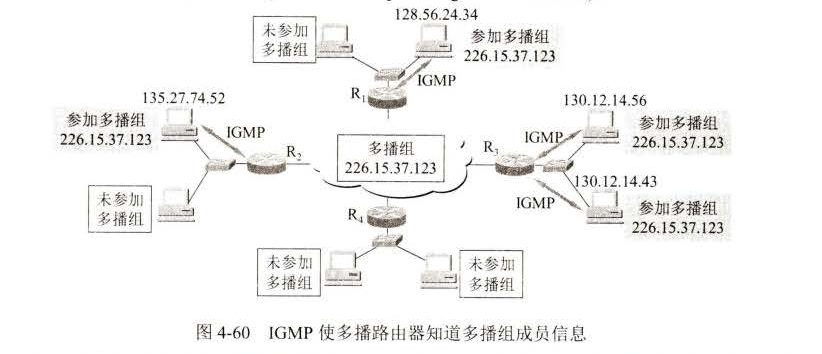
NAT:
假定在一个机构内部的计算机通信也是采用 TCP/I 协议，那么从原则上讲，对于这些仅在机构内部使用的计殍机就可以由本机构自行分配其 IP 地址。这就是说，让这些计算机使用仅在本机构有效的 IP 地址（这种地址称为本地地址），而不需要向互联网的管理机构申请全球唯一的 IP 地址（这种地址称为全球地址）。这样就可以大大节约宝贵的全球 IP 地址资源。
网络地址转换 NAT方法是在 1994 年提出的。这种方法需要在专用网连接到互联网的路由器上安装 NAT 软件。装有 NAT 软件的路由器叫作 NAT路由器，它至少有一个有效的外部全球 IP 地址。这样，所有使用本地地址的主机在和外界通信时，都要在 NAT 路由器上将其本地地址转换成全球 IP 地址，才能和互联网连接
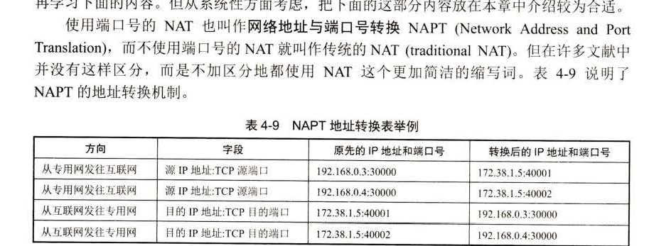
本章的一些概念:
- TCP/IP 体系中的网络层向上只提供简单灵活的、无连接的、尽最大努力交付的数据报服务。网络层不提供服务质量的承诺，不保证分组交付的时限，所传送的分组可能出错、丢失、重复和失序。进桯之间通信的可靠性由运输层负责。
- IP 网是虚拟的，因为从网络层上看， IP 网就是一个统一的、抽象的网络（实际上是异构的）。 IP 层抽象的互联网屏蔽了下层网络很复杂的细节，使我们能够使用统一的、抽象的 IP 地址处理主机之间的通信问题。
- 互联网上交付主机的方式有两种：在本网络上的直接交付（不经过路由器）和到其他网络的间接交付（经过至少一个路由器，但最后一次一定是直接交付）。
- 一个JP地址在整个互联网范围内是唯一的。早期使用的是分类的 IP 地址，包括类、 类和 类地址（单播地址），以及 类地址（多播地址）。 类地址未使用。
- 分类的 IP 地址由网络号字段（指明网络）和主机号字段（指明主机）组成。网络号字段最前面的类别位指明 IP 地址的类别。目前已广泛使用无分类域间路由选择 JD 记法把 IP 地址后面加上斜线”/“,斜线后是前缀的位数。前缀（或网络前缀）指明网络，后缀指明主机。前缀相同的连续的 IP 地址构成 “CIDR 地址块”。
- CIDR 32 位地址掩码（或子网掩码）由一串 和一串 组成，其中 的个数是前缀的长度。只要把 IP 地址和地址掩码按位进行 AND 运算，即可得出网络地址。
- IP 地址是一种分等级的地址结构。 IP 地址管理机构在分配 IP 地址时只分配网络前缀（网络号），而主机号则由得到该网络前缀的单位自行分配。路由器仅根据目的主机所连接的网络前缀（网络号）来转发分组。
- IP 地址标志一台主机（或路由器）和一条链路的接口。多归屈主机同时连接到两个或更多的网络上。这样的主机同时具有两个或更多的 IP 地址，其网络前缀必须是不同的。由千一个路由器至少应当连接到两个网络，因此一个路由器至少应当有两个不同的 IP 地址。
- 按照互联网的观点，用转发器或网桥连接起来的若干个局域网仍为一个网络。所有分配到网络前缀的网络（不管是范即很小的局域网，还是可能稷盖很大地理范围的广域网）都是平等的．
- MAC 地址（即硬件地址或物理地址）是数据链路层和物理层使用的地址，而 IP址是网络层和以上各层使用的地址，是一种逻辑地址（用软件实现的），在数据链路层看不见数据报的 IP 地址。
- IP 数据报分为首部和数据两部分。首部的前一部分是固定长度，共 20 字节，是所1P 数据报必须具有的（源地址、目的地址、总长度等觉要字段都在固定首部中）。一些长度可变的可选字段放在固定首部的后面。
- IP 首部中的生存时间字段给出了f 数据报在互联网中所能经过的砓大路由器数，可防止 IP 数据报在互联网中无限制地兜圈子。
- 地址解析协议 ARP IP 地址解析为 MAC 地址，它解决同一个局域网上的主机或路由器的 lP 地址和 MAC 地址的映射问题。 ARP 的高速缓存可以大大减少网络上的通信量。
- 在互联网中，我们无法仅根据 MAC 地址寻找到在某个网络上的某台主机。因此，lP 地址到 MAC 地址的解析是非常必要的。
- 路由聚合（把许多前缀相同的地址用一个来代替）有利于减少路由表中的项目，减少路由器之间的路由选择信息的交换，从而提高了整个互联网的性能。
- “转发”和“路由选择“是不同的概念。”转发”是单个路由器的动作。“路由选择“是许多路由器共同协作的过程，这些路巾器相互交换信息，目的是生成路由表，再从路由表导出转发表。若采用自适应路由选择算法，则当网络拓扑变化时，路由表和转发表都能够自动更新。在许多情况下，可以不考虑转发表和路由表的区别，而都使用路由表这一名词。
- 自治系统(AS) 就是在单一的技术管理下的一组路由器。一个自治系统对其他自治系统表现出的是一个单一的和一致的路由选择策略。
- 路由选择协议有两大类：内部网关协议（或自治系统内部的路由选择协议），如RIP OSPF: 外部网关协议（或自治系统之间的路由选择协议），如 BGP-4
- RIP 是分布式的基千距离向横的路由选择协议，只适用千小型互联网。 RIP 按固定的时间间隔与相邻路由器交换信息。交换的信息是自己当前的路由表，即到达本自治系统中所有网络的（最短）距离，以及到每个网络应经过的下一跳路由器。
- OSPF 是分布式的链路状态协议，适用于大型互联网。 OSPF 只在链路状态发生变化时，才向本自治系统中的所有路由器，用洪泛法发送与本路由器相邻的所有路由器的链路状态信息。＂链路状态”指明本路由器都和哪些路由器相邻，以及该链路的＂度量”。”度敝”可表示费用、距离、时延、带宽等，可统称为“代价＂。所有的路由器最终都能建立一个全网的拓扑结构图。
- 协议 BGP-4 简称为 BGP, 是一种路径向量路由选择协议，用千在不同自治系统AS 之间的路由选择。 BGP 力求在 AS 之间，找出一条能够到达目的网络前缀且较好的路由（不是最佳路由，但不能兜圈子）。各种 BGP 报文是在 AS 之间的 BGP连接（即 eBGP) AS 内部的 BGP 连接（即iBGP) 上传送的。 BGP 路由指出，从哪个路由器，经过哪些 AS, 就可以到达哪个网络前缀。
- 网际控制报文协议 ICMP IP 层的协议。JCMP 报文作为 IP 数据报的数据，加上首部后组成 IP 数摒报发送出去。使用 ICMP 并非为了实现可靠传输。 ICMP 允许主机或路由器报告差错情况和提供有关异常情况的报告。 ICMP 报文的种类有两种，ICMP 差错报告报文和 ICMP 询问报义。
- ICMP 的一个重要应用就是分组网间探测 PING, 用来测试两台主机之间的连通性。PING 使用了 ICMP 回送谘求与回送回答报文。
- 要解决 IP 地址耗尽的问题，蛟根本的办法就是采用具有更大地址空间的新版本的
- IPv6 所带来的主要变化是： I) 更大的地址空间（采用 128 位的地址）： 2) 灵活的首部格式； 3) 改进的选项； 4) 支持即插即用； 5) 支持资源的预分配； (6) JPv6 首部改为 字节对齐。
- 1Pv6 数据报在基本首部的后面允许有零个或多个扩展首部，再后面是数据。所有的扩展首部和数据合起来叫作数据报的有效载荷或净负荷。
- IPv6 数据报的目的地址可以是以下三种基本类型地址之一：单播、多播和任播。1Pv6 的地址使用旨号十六进制记法。
- IPv6 过渡只能采用逐步演进的办法，必须使新安装的 1Pv6 系统能够向后兼容。
- IPv6 过渡可以使用双协议栈或使用隧道技术。与单播相比，在一对多的通信中， IP 多播可大大节约网络资源。 IP 多播使用IP 地址。 IP 多播需要使用网际组管理协议 IGMP 和多播路由选择协议。
- 虚拟专用网 VPN 利用公用的互联网作为本机构各专用网之间的通信载体。 VPN部使用互联网的专用地址。一个 VPN 至少要有一个路由器具有合法的全球 IP 地址，这样才能和本系统的另一个 VPN 通过互联网进行通信。所有通过互联网传送的数据都必须加密。
- 使用网络地址转换 NAT 技术，可以在专用网络内部使用专用 lP 地址，而仅在连接到互联网的路由器使用全球 IP 地址。这样就大大节约了宝贵的[P地址。
- MPLS 的特点： I) 支持面向连接的服务质榄； 2) 支持流量工程，均衡网络负载：(3) 有效地支持虚拟专用网 VPN
- MPLS 在入口节点给每一个 IP 数据报打上固定长度的“标签＂，然后根据标签在第二层（链路层）用硬件进行转发（在标签交换路由器中进行标签对换），因而转发速率大大加快。
- 软件定义网络 SDN 并不是要改变网络的功能，而是一种新的体系结构，其要点是：(I) 基于流的转发； 2) 数据层面与控制层而分离； 3) 控制层面用软件实现，并且是逻辑上的集中式控制； 4) 可编程的网络。
- SON 控制器有以下三个层次： I) 通信层，大多采用协议 enfl ow, 与数据层面的接口叫作南向接口。 (2) 状态管理层。（3) 到网络控制应用程序层的接口（北向接口）。
第五章：运输层
从通信和信息处理的角度来看，运输层向它上面的应用层提供通信服务，它属于面向通信部分的最高层，同时也是用户功能中的最低层。
真正进行通信的实体是在主机中的哪个构件呢？是主机中的应用进程，是一台主机中的应用进程和另一台主机中的应用进程在交换数据（即通信）。因此严格地讲，两台主机进行通信就是两台主机中的应用进程互相通信。 IP 协议虽然能把分组送到目的主机，但是这个分组还停留在主机的网络层而没有交付主机中的应用进程。通信的两端应当是两个主机中的应用进程。也就是说，端到端的通信是应用进程之间的通信

运输层有一个很重要的功能一复用和分用。这里的“复用”是指在发送方不同的应用进程都可以使用同一个运输层协议传送数据（当然需要加上适当的首部），而“分用”是指接收方的运输层在剥去报文的首部后能够把这些数据正确交付目的应用进程。
网络层为主机之间的通信提供服务，而运输层则在网络层的基础上，为应用进程之间的通信提供服务。
运输层还要对收到的报文进行差错检测。大家应当还记得，在网络层， IP 数据报首部中的检验和字段，只检验首部是否出现差错而不检查数据部分。根据应用程序的不同盆求，运输层需要有两种不同的运输协议，即面向连接的 TCP和无连接的 UDP。
我们还应指出，运输层向高层用户屏蔽了下面网络核心的细节（如网络拓扑、所采用的路由选择协议等），它使应用进程看见的就是好像在两个运输层实体之间有一条端到端的逻辑通信信道，但这条逻辑通信信道对应层的表现却因运输层使用的不同协议而有很大的差别。当运输层采用面向连接的 TCP 协议时，尽管下面的网络是不可靠的（只提供尽最大努力服务），但这种逻辑通信信道就相当于一条全双工的可靠信道。但当运输层采用无连接的UDP 协议时，这种逻辑通信信道仍然是一条不可靠信道。
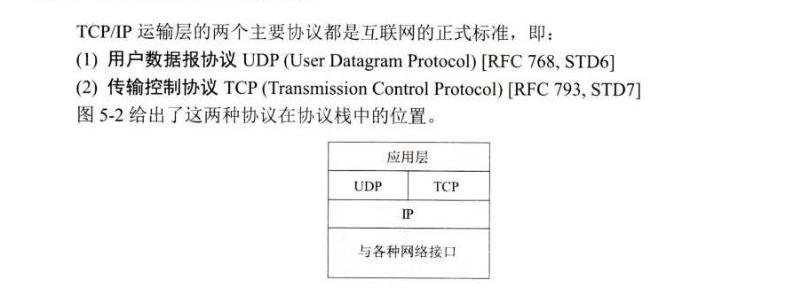
两个对等运输实体在通信时传送的数据单位叫作运输协议数据单元TPDU (Transport Protocol Data Unit)。但在 TCP/IP 体系中，则根据所使用的协议是 TCPUDP, 分别称之为 TCP 报文段(segment)或 UDP 用户数据报。
UDP 在传送数据之前不需要先建立连接。远地主机的运输层在收到 UDP 报文后，不需要给出任何确认。
TCP 则提供面向连接的服务。在传送数据之前必须先建立连接，数据传送结束后要释放连接。
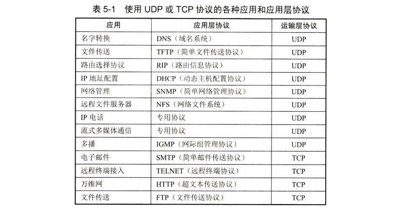
简单的理解：如果追求实时速度，且可以容忍少量的丢失使用UDP，如果追求安全连接是TCP。
然而，我们这里使用了复用，也就是说我们在传输层中并不知道我们的这些分组是发送给哪个进程的。所以，还需要一个抽象：也就是说端口。每一个端口用一个称为端口号的正整数来标志。主机的操作系统提供了接口机制，使得进程能够通过这种机制找到所要找的端口。
这种在协议栈层间的抽象的协议端口是软件端口，和路由器或交换机上的硬件端口是完全不同的概念。硬件端口是不同硬件设备进行交互的接口，而软件端口是应用层的各种协议进程与运输实体进行层间交互的地点。
TCP/IP的运输层用一个 16 位端口号来标志一个端口。但请注意，端口号只具有本地意义，它只是为了标志本计算机应用层中的各个进程在和运输层交互时的层间接口。在互联网不同计算机中，相同的端口号是没有关联的。 16 位的端口号可允许有 65535 个不同的端口号
端口分为两大类：
服务器的使用的端口
应用程序 FTP TELNET SMTP DNS TFTP HTTP SNMP SNMP（trap） HTTPS 熟知端口号 21 23 25 53 69 80 161 162 443 客户端使用的端口号
数值为 49152~65535 。由千这类端口号仅在客户进程运行时才动态选择，因此又叫作短暂端口号。
UDP 概述：
(1) UDP 是无连接的，即发送数据之前不需要建立连接（当然，发送数据结束时也没有连接可释放），因此减少了开销和发送数据之前的时延。
(2) UDP 使用尽最大努力交付，即不保证可靠交付，因此主机不需要维持复杂的连接状态表（这里面有许多参数）。
(3) UDP 是面向报文的。发送方的 UDP 对应用程序交下来的报文，在添加首部后就向下交付 1P 层。 UDP 对应用层交下来的报文，既不合并，也不拆分，而是保留这些报文的边界。这就是说，应用层交给 UDP 多长的报文， UDP 就照样发送，即一次发送一个报文，如5-3 所示。在接收方的 UDP, lP 层交上来的 UDP 用户数据报，在去除首部后就原封不动地交付上层的应用进程。也就是说， UDP 一次交付一个完整的报文。因此，应用程序必须选择合适大小的报文。若报文太长， UDP 把它交给 IP 层后， IP 层在传送时可能要进行分片，这会降低 lP 层的效率。反之，若报文太短， UDP 把它交给 IP 层后，会使 lP 数据报的首部的相对长度太大，这也降低了 IP 层的效率。
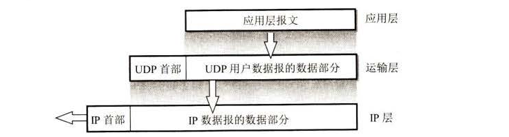（）） （4）UDP 没有拥塞控制，因此网络出现的拥塞不会使源主机的发送速率降低。这对某些实时应用是很重要的。很多的实时应用（如 IP 电话、实时视频会议等)要求源主机以恒定的速率发送数据，并且允许在网络发生拥塞时丢失一些数据，但却不允许数据有太大的时延。UDP 正好适合这种要求。
(5) UDP 支持一对一、一对多、多对一和多对多的交互通信。
(6) UDP 的首部开销小，只有 个字节，比 TCP 20 个字节的首部要短。
格式如下所示：
(I) 源端口：源端口号。在需要对方回信时选用。不需要时可用全
(2) 目的端口：目的端口号。这在终点交付报文时必须使用。
(3) 长度：UDP 用户数据报的长度，其最小值是 （仅有首部）。
(4) 检验和：检测 UDP 用户数据报在传输中是否有错。有错就丢弃。

传输控制协议 TCP 概述：
(I) TCP 是面向连接的运输层协议。这就是说，应用程序在使用 TCP 协议之前，必须先建立 TCP 连接。在传送数据完毕后，必须释放已经建立的 TCP 连接。也就是说，应用进程之间的通估好像在“打电话”：通话前需先拨号建立连接，通话结束后要挂机释放连接。
(2) TCP 连接只能有两个端点, 通过TCP连接传输的数据只能是点对点的（一对一）。
(3) TCP 提供可靠交付的服务。迪过 TCP 连接传送的数据，无差错、不丢失、不重复，井且按序到达。
(4) TCP 提供全双工通信。 TCP 允许通估双方的应用进程在任何时候都能发送数据。TCP 连接的两端都设布发送缓存和搂收缓存，用来临时存放双向通信的数据。在发送时，应用程序在把数据传送给 TCP 的缓存后，就可以做自己的事，而 TCP 在合适的时候把数据发送出去。在接收时， TCP 把收到的数据放入缓存，上层的应用进程在合适的时候读取缓存中的数据。
(5) 面向字节流。 TCP 中的“流”指的是流入到进程或从进程流出的字节序列。“面向字节流”的含义是：虽然应用和 TCP的交互是一次一个数据块（大小不等），但TCP 把应用程序交下来的数据仅仅看成是一连串的无结构的字节流。 TCP 并不知道所传送的字节流的含义。 TCP 不保证接收方应用程片所收到的数据块和发送方应用程序所发出的数据块具有对应大小的关系（例如，发送方应用程序交给发送方的 TCP 10 个数据块，但接收方的 TCP 可能只用了 个数据块就把收到的字节流交付上层的应用程序）。但接收方应用程序收到的字节流必须和发送方应用程序发出的字节流完全一样。当然，接收方的应用程序必须有能力识别收到的字节流，把它还原成有意义的应用层数据
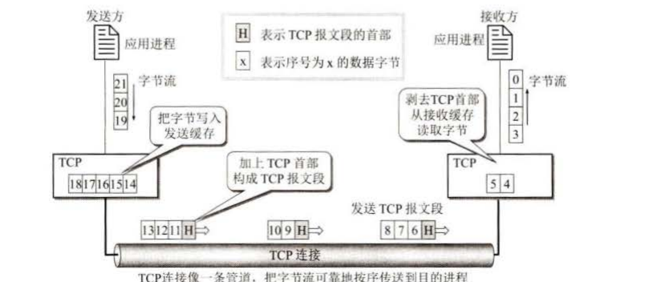
TCP 把连接作为最基本的抽象。
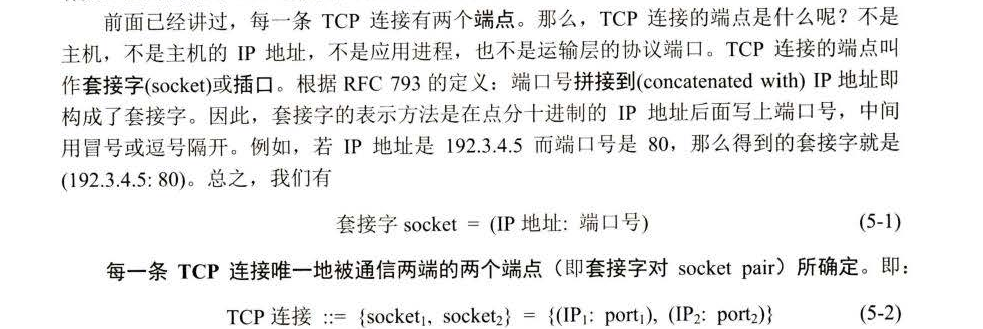
可靠传输的工作原理
（1）无差错情况
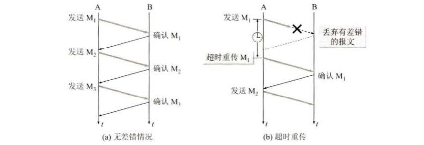
出现差错：发出方发出一段时间后没有收到确认，那么认为丢失重发，如果收到了那就会取消计时。
第一， 在发送完一个分组后，必须暂时保留已发送的分组的副本（在发生超时重传时使用）。只有在收到相应的确认后才能消除暂时保衍的分组副本。
第二， 分组和确认分组都必须进行编号。。这样才能明确是哪一个发送出去的分组收到了确认，而哪一个分组还没有收到确认。
第三，超时计时器设置的重传时间应当比数据在分组传输的平均往返时间更长一些。
确认丢失和确认迟到：

连续 ARQ协议：
连续 ARQ协议规定，发送方每收到一个确认，就把发送窗口向前滑动一个分组的位置。于是把发送窗口向前移动一个分组的位置。如果原来已经发送了前 个分组，那么现在就可以发送窗口内的第 个分组了。接收方一般都是采用累积确认的方式。这就是说，接收方不必对收到的分组逐个发送确认，而是在收到几个分组后，对按序到达的最后一个分组发送确认，这就表示；到这个分组为止的所有分组都已正确收到了。
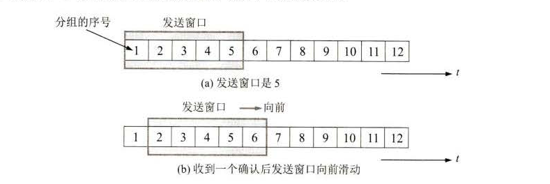
TCP 报文段的首部格式：
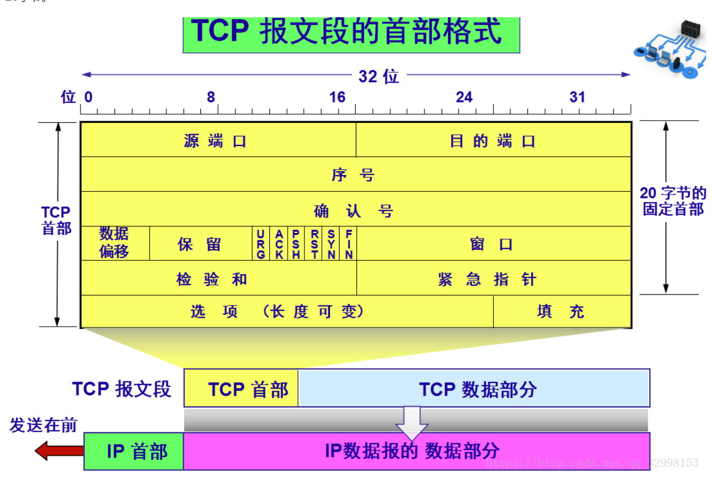
首部固定部分各字段意义如下：
1） 源端口和目的端口: 各占2个字节，分别写入源端口和目的端口。
2） 序号: 占4字节。序号范围是【0，2^32 - 1】，共2^32（即4294967296）个序号。序号增加到2^32-1后，下一个序号就又回到0。也就是说，序号使用mod 2^32运算。TCP是面向字节流的。在一个TCP连接中传送的字节流中的每一个字节都按顺序编号。整个要传送的字节流的起始序号必须在连接建立时设置。首部中的序号字段值则是指的是本报文段所发送的数据的第一个字节的序号。例如，一报文段的序号是301，而接待的数据共有100字节。这就表明：本报文段的数据的第一个字节的序号是301，最后一个字节的序号是400。显然，下一个报文段（如果还有的话）的数据序号应当从401开始，即下一个报文段的序号字段值应为401。这个字段的序号也叫“报文段序号”。
3） 确认号: 占4字节，是期望收到对方下一个报文段的第一个数据字节的序号。例如，B正确收到了A发送过来的一个报文段，其序号字段值是501，而数据长度是200字节（序号501~700），这表明B正确收到了A发送的到序号700为止的数据。因此，B期望收到A的下一个数据序号是701，于是B在发送给A的确认报文段中把确认号置为701。注意，现在确认号不是501，也不是700，而是701。
总之：若确认号为= N，则表明：到序号N-1为止的所有数据都已正确收到。
4） 数据偏移: 占4位，它指出TCP报文段的数据起始处距离TCP报文段的起始处有多远。这个字段实际上是指出TCP报文段的首部长度。由于首部中还有长度不确定的选项字段，因此数据偏移字段是必要的，但应注意，“数据偏移”的单位是32位字（即以4字节的字为计算单位）。由于4位二进制数能表示的最大十进制数字是15，因此数据偏移的最大值是60字节，这也是TCP首部的最大字节（即选项长度不能超过40字节）。
5） 保留: 占6位，保留为今后使用，但目前应置为0 。
下面有6个控制位，用来说明本报文段的性质。
6） 紧急URG（URGent）: 当URG=1时，表明紧急指针字段有效。它告诉系统此报文段中有紧急数据，应尽快发送（相当于高优先级的数据），而不要按原来的排队顺序来传送。例如，已经发送了很长的一个程序要在远地的主机上运行。但后来发现了一些问题，需要取消该程序的运行，因此用户从键盘发出中断命令。如果不使用紧急数据，那么这两个字符将存储在接收TCP的缓存末尾。只有在所有的数据被处理完毕后这两个字符才被交付接收方的应用进程。这样做就浪费了很多时间。
当URG置为1时，发送应用进程就告诉发送方的TCP有紧急数据要传送。于是发送方TCP就把紧急数据插入到本报文段数据的最前面，而在紧急数据后面的数据仍然是普通数据。这时要与首部中紧急指针（Urgent Pointer）字段配合使用。
7） 确认ACK（ACKnowledgment）: 仅当ACK = 1时确认号字段才有效，当ACK = 0时确认号无效。TCP规定，在连接建立后所有的传送的报文段都必须把ACK置为1。
8） 推送 PSH（PuSH): 当两个应用进程进行交互式的通信时，有时在一端的应用进程希望在键入一个命令后立即就能收到对方的响应。在这种情况下，TCP就可以使用推送（push）操作。这时，发送方TCP把PSH置为1，并立即创建一个报文段发送出去。接收方TCP收到PSH=1的报文段，就尽快地（即“推送”向前）交付接收应用进程。而不用再等到整个缓存都填满了后再向上交付。
9） 复位RST（ReSeT）: 当RST=1时，表名TCP连接中出现了严重错误（如由于主机崩溃或其他原因），必须释放连接，然后再重新建立传输连接。RST置为1还用来拒绝一个非法的报文段或拒绝打开一个连接。
10） 同步SYN（SYNchronization）: 在连接建立时用来同步序号。当SYN=1而ACK=0时，表明这是一个连接请求报文段。对方若同意建立连接，则应在响应的报文段中使SYN=1和ACK=1，因此SYN置为1就表示这是一个连接请求或连接接受报文。
11） 终止FIN（FINis，意思是“完”“终”）: 用来释放一个连接。当FIN=1时，表明此报文段的发送发的数据已发送完毕，并要求释放运输连接。
12） 窗口 : 占2字节。窗口值是【0，2^16-1】之间的整数。窗口指的是发送本报文段的一方的接受窗口（而不是自己的发送窗口）。窗口值告诉对方：从本报文段首部中的确认号算起，接收方目前允许对方发送的数据量（以字节为单位）。之所以要有这个限制，是因为接收方的数据缓存空间是有限的。总之，窗口值作为接收方让发送方设置其发送窗口的依据。
例如，发送了一个报文段，其确认号是701，窗口字段是1000.这就是告诉对方：“从701算起，我（即发送方报文段的一方）的接收缓存空间还可接受1000个字节数据（字节序号是701~1700），你在给我发数据时，必须考虑到这一点。”
总之：窗口字段明确指出了现在允许对方发送的数据量。窗口值经常在动态变化。
13） 检验和: 占2字节。检验和字段检验的范围包括首部和数据这两部分。和UDP用户数据报一样，在计算检验和时，要在TCP报文段的前面加上12字节的伪首部。伪首部的格式和UDP用户数据报的伪首部一样。但应把伪首部第4个字段中的17改为6（TCP的协议号是6）；把第5字段中的UDP中的长度改为TCP长度。接收方收到此报文段后，仍要加上这个伪首部来计算检验和。若使用TPv6,则相应的伪首部也要改变。
14） 紧急指针: 占2字节。紧急指针仅在URG=1时才有意义，它指出本报文段中的紧急数据的字节数（紧急数据结束后就是普通数据） 。因此，在紧急指针指出了紧急数据的末尾在报文段中的位置。当所有紧急数据都处理完时，TCP就告诉应用程序恢复到正常操作。值得注意的是，即使窗口为0时也可以发送紧急数据。
15） 选项: 长度可变，最长可达4字节。当没有使用“选项”时，TCP的首部长度是20字节。
TCP最初只规定了一种选项，即最大报文段长度MSS（Maximum Segment Szie）。注意MSS这个名词含义。MSS是每一个TCP报文段中的数据字段的最大长度。数据字段加上TCP首部才等于整个的TCP报文段。所以MSS并不是整个TCP报文段的最大长度，而是“TCP报文段长度减去TCP首部长度”。
为什么要规定一个最大报文长度MSS呢？这并不是考虑接受方的接收缓存可能存放不下TCP报文段中的数据。实际上，MSS与接收窗口值没有关系。我们知道，TCP报文段的数据部分，至少要加上40字节的首部（TCP首部20字节和IP首部20字节，这里还没有考虑首部中的可选部分）才能组装成一个IP数据报。若选择较小的MSS长度，网络的利用率就降低。设想在极端情况下，当TCP报文段只含有1字节的数据时，在IP层传输的数据报的开销至少有40字节（包括TCP报文段的首部和IP数据报的首部）。这样，对网络的利用率就不会超过1/41。到了数据链路层还要加上一些开销。但反过来，若TCP报文段非常长，那么在IP层传输时就有可能要分解成多个短数据报片。在终点要把收到的各个短数据报片组成成原来的TCP报文段，当传输出错时还要进行重传，这些也都会使开销增大。
因此，MSS应尽可能大些，只要在IP层传输时不需要分片就行。由于IP数据报所经历的路径是动态变化的，因此在这条路径上确定的不需要的分片的MSS，如果改走另一条路径就可能需要进行分片。因此最佳的MSS是很难确定的。在连接过程中，双方都把自己能够支持的MSS写入这一字段，以后就按照这个数值传输数据，两个传送方向可以有不同的MSS值。若主机未填写这一项，则MSS的默认值是536字节长。因此，所有在互联网上的主机都应该接受的报文段长度是536+20（固定首部长度）=556字节。
后来又增加了几个选项如窗口扩大选项、时间戳选项等。
窗口扩大选项是为了扩大窗口。我们知道，TCP首部中窗口字段长度是16位，因此最大的窗口大小为64K字节。虽然这对早期的网络是足够用的，但对于包含卫星信道的网络，传播时延和宽带都很大，要获得高吞吐量需要更大的窗口大小。
窗口扩大选项占3字节，其中有一个字节表示移位值S。新的窗口值等于TCP首部中的窗口位数从16增大到（16+S）。移位值允许使用的最大值是14，相当于窗口最大值增大到2^（16+14）-1=2^30-1。
窗口扩大选项可以在双方初始建立TCP连接时进行协商。如果连接的某一端实现了窗口扩大，当它不再需要扩大其窗口时，可发送S=0选项，使窗口大小回到16。
时间戳选项占10字节，其中最主要的字段是时间戳字段（4字节）和时间戳回送回答字段（4字节）。时间戳选项有以下两个概念：
第一、 用来计算往返时间RTT。发送方在发送报文段时把当前时钟的时间值放入时间戳字段，接收方在确认该报文段时把时间戳字段复制到时间戳回送回答字段。因此，发送方在收到确认报文后，可以准确地计算出RTT来。
第二、 用于处理TCP序号超过2^32的情况，这又称为防止序号绕回PAWS。我们知道，TCP报文段的序号只有32位，而每增加2^32个序号就会重复使用原来用过的序号。当使用高速网络时，在一次TCP连接的数据传送中序号很可能被重复使用。例如，当使用1.5Mbit/s的速度发送报文段时，序号重复要6小时以上。但若用2.5Gbit/s的速率发送报文段，则不到14秒钟序号就会重复。为了使接收方能够把新的报文段和迟到很久的报文段区分开，则可以在报文段中加上这种时间戳。
超时重传时间的选择:
TCP 采用了一种自适应算法，它记录一个报文段发出的时间，以及收到相应的确认的时间。这两个时间之差就是报文段的往返时间 RTT TCP 保留了 RTT 的一个加权平均往返时间 RTTs （这又称为平滑的往返时间， 表示 Smoo hed 。因为进行的是加权乎均，因此得出的结果更加平滑）。每当第一次测堂到 RTT 样本时， RT飞值就取为所测址到的 RTT 样本值。但以后每测量到一个新的 RTT 样本，就按下式重新计算一次 RTTs
TCP 的流量控制
所谓流量控制就是让发送方的发送速率不要太快，要让接收方来得及接收。
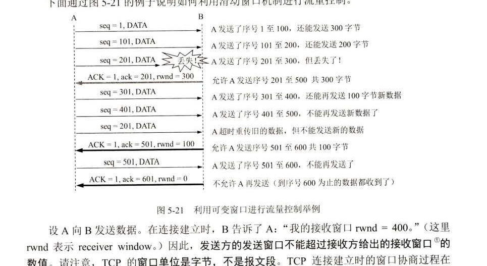
TCP 为每一个连接设有一个持续计时器(pers ence ti mer) 。只要TCP 连接的一方收到对方的零窗口通知，就启动持续计时器。若持续计时器设置的时间到期，就发送一个零窗口探测报文段（仅携带1字节的数据）＇
TCP 的拥塞控制方法：
慢开始、拥塞避免 、快重传和快恢复。
慢开始算法的思路是这样的：当主机在已建立的 TCP 连接上开始发送数据时，并不消楚网络当前的负荷情况。如果立即把大量的数字字节注入到网络，那么就有可能引起网络发生拥塞。经验证明，较好的方法是先探测一下，即由小到大逐渐增大注入到网络中的数据字节，也就是说，由小到大逐渐增大拥塞窗口数值。
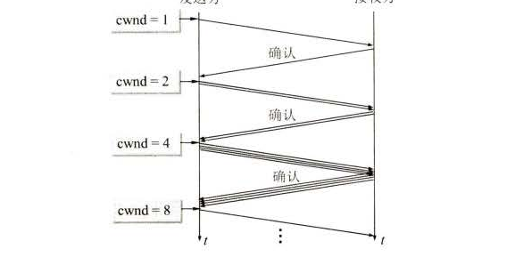

在拥塞避免阶段，拥塞窗口是按照线性规律增大的，这就是前面提到过的加法增大 AI 。而一旦出现超时或 个亟复的确认，就牧把门限值设置为当前拥塞窗口值的一半，并大大减小拥塞窗口的数值。这常称为＂乘法减小 “MD” 。二者合在一起就是所谓的 AIMD 符法。
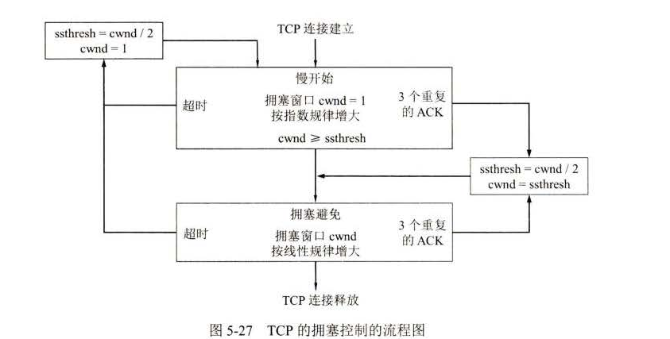
主动队列管理AQM：
TCP拥塞控制和网络层采取的策略有密切联系。 重传会使TCP连接的发送端认为在网络中发生了拥塞。于是在TCP的发送端就采取了拥塞控制措施， 但实际上网络并没有发生拥塞。 网络层的策略对TCP拥塞控制影响最大的就是路由器的分组丢弃策略。
“先进先出”FIFO处理规则
路由器的队列通常都是按照“先进先出”FIFO (First In First Out) 的规则处理到来的分组。当队列已满时，以后再到达的所有分组（如果能够继续排队，这些分组都将排在队列的尾部）将都被丢弃。这就叫做尾部丢弃策略 (tail-drop policy)。
路由器的尾部丢弃往往会导致一连串分组的丢失， 这就使发送方出现超时重传，使TCP进入拥塞控制的慢开始状态，结果使TCP连接的发送方突然把数据的发送速率降低到很小的数值。
更为严重的是，在网络中通常有很多的TCP连接， 这些连接中的报文段通常是复用在网络层的IP数据报中传送的。
在这种情况下，若发生了路由器中的尾部丢弃，就可能会同时影响到很多条TCP连接，结果使这许多TCP连接在同一时间突然都进入到慢开始状态。这在TCP 的术语中称为全局同步 (global syncronization)。
全局同步使得全网的通信量突然下降了很多，而在网络恢复正常后，其通信量又突然增大很多。
主动队列管理AQM
1998年提出了主动队列管理AQM (Active Queue Management)。
所谓“主动”就是不要等到路由器的队列长度已经达到最大值时才不得不丢弃后面到达的分组。这样就太被动了。应当在队列长度达到某个值得警惕的 数值时（即当网络拥塞有了某些拥塞征兆时），就主动丢弃到达的分组。提醒发送方放慢发送速率， 会有可能减轻网络拥塞甚至不出现拥塞。
AQM 可以有不同实现方法，其中曾流行多年的就是随机早期检测RED (Random Early Detection)。
随机早期检测RED
使路由器的队列维持两个参数：队列长度最小门限THmin和最大门限Thmax 。 RED对每一个到达的分组量，都先计算当前平均队列长度LAV 。
(1) 若平均队列长度小于最小门限THmin，则将新到达的分组放入队列进行排队。
(2) 若平均队列长度超过最大门限THmax，则将新到达的分组丢弃。
(3) 若平均队列长度在最小门限THmin和最大门限THmax 之间，则按照某一概率p将新到达的分组丢弃。
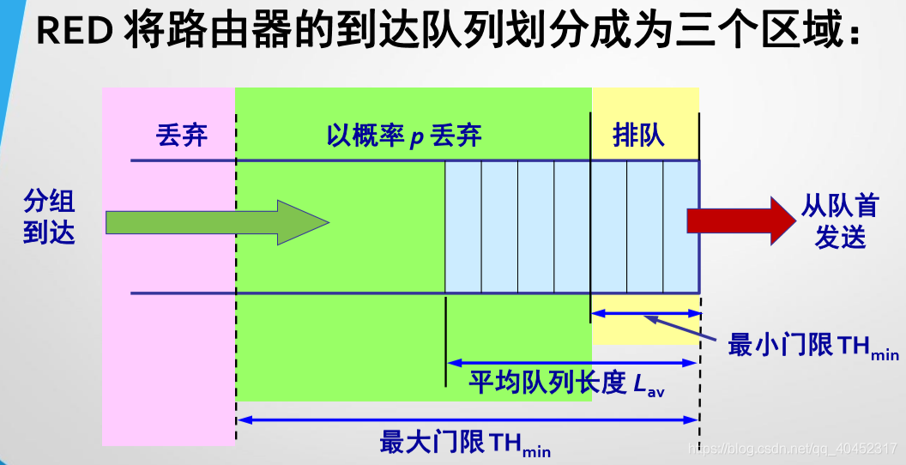
当LAV<Thmin时，丢弃概率p = 0。
当LAV >Thmax时，丢弃概率p= 1。
当THmin <LAV <THmax时， 0 <p <1 。
在RED的操作中，最难处理的就是丢弃概率p的选择，因为p并不是个常数。例如，按线性规律变化，从0变到 pmax。
多年的实践证明，RED的使用效果并不太理想。 2015年公布的RFC 7567已经把RFC 2309列为陈旧的， 并且不再推荐使用RED。
对路由器进行主动队列管理AQM仍是必要的。 AQM实际上就是对路由器中的分组排队进行智能管理，而不是简单地把队列的尾部丢弃。 现在已经有几种不同的算法来代替旧的RED，但都还在实验阶段。
TCP连接建立：
TCP正常的建立连接过程如下图所示：
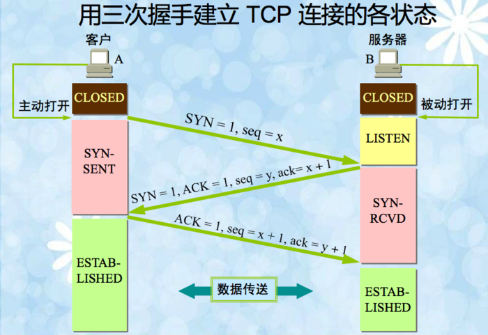
- 客户端发送的TCP报文中标志位SYN置1，初始序号seq=x（随机选择）。Client进入SYN_SENT状态，等待Server确认。
- 服务器收到数据包后，根据标志位SYN=1知道Client请求建立连接，Server将标志位SYN和ACK都置为1，ack=x+1，随机产生一个初始序号seq=y，并将该数据包发送给Client以确认连接请求，Server进入SYN_RCVD状态。
- Client收到确认后，检查ack是否为x+1，ACK是否为1，如果正确则将标志位ACK置为1，ack=y+1，并将该数据包发送给Server。Server检查ack是否为y+1，ACK是否为1，如果正确则连接建立成功，Client和Server进入ESTABLISHED状态，完成三次握手，随后Client与Server之间可以开始传输数据了。
2. 同时打开
同时打开连接是指通信的双方在接收到对方的SYN包之前，都进行了主动打开的操作并发出了自己的SYN包。由于一个四元组（源IP、源端口、目的IP、目的端口）标识一个TCP连接，一个TCP连接要同时打开需要通信的双方知晓对方的IP和端口信息才行，这种场景在实际情况中很少发生。同时打开的流程如下图：
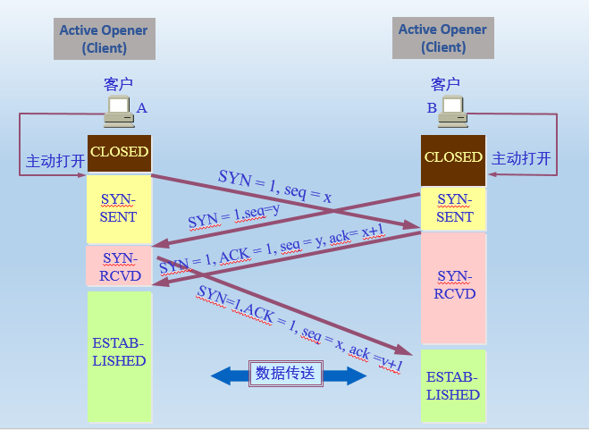
- A的应用程序使用端口7777向B的端口8888发送TCP连接请求
- B的应用程序使用端口8888向A的端口7777发送TCP连接请求
- A收到B的ACK（实际上是SYN+ACK）后进入ESTABLISHED状态
- B收到A的ACK（实际上是SYN+ACK）后也进入ESTABLISHED状态
注意：
- 对于同时打开它仅建立一条TCP连接而不是两条
- 连接建立过程需要四次握手
- 两端的状态变化都是由CLOSED->SYN_SENT->SYN_RCVD->ESTABLISHED
- 双方发出的SYN+ACK报文中，seq均未递增。比如对于A，发送SYN时seq为x，发送SYN+ACK时seq仍为x
3. 自连接
自连接是同时打开的一个特例。一条TCP连接由四元组（源IP、源端口、目的IP、目的端口）来决定，在上面的例子中，源IP、目的IP、目的端口都是确定的，唯一不确定的是源端口。如果系统选择的源端口与目的端口相同,那么Client和Server（实际上不存在Server这个实体）就是相同的TCP实体。
- Cient向127.0.0.1:50000发送SYN，进入SYN_SENT状态
- 由于Client已经打开了端口50000，所以不会产生RST报文；相反系统以为50000端口有服务器在监听，就接收了这个SYN报文，并从SYN_SENT状态变为SYN_RCVD状态
- 由于TCP状态从SYN_SENT状态变为SYN_RCVD状态，需要发送了SYN+ACK报文
- 参考同时打开的状态图，SYN+ACK报文将TCP状态从SYN_RCVD变为ESTABLISHED
二、 TCP连接断开过程
1. 四次挥手
TCP连接断开过程如下图所示：
- Client发送一个FIN，用来关闭Client到Server的数据传送，Client进入FIN_WAIT_1状态。
- Server收到FIN后，发送一个ACK给Client，确认序号为u + 1（与SYN相同，一个FIN占用一个序号），Server进入CLOSE_WAIT状态。
- Server发送一个FIN，用来关闭Server到Client的数据传送，Server进入LAST_ACK状态。
- Client收到FIN后，Client进入TIME_WAIT状态(主动关闭方才会进入该状态），接着发送一个ACK给Server，确认序号为w + 1，Server进入CLOSED状态，完成四次挥手。
2. 同时关闭连接
同时关闭和前面同时打开的四次握手过程基本类似，流程如下：
注意：
- 两端的状态变化都是由ESTABLISHED->FIN_WAIT_1->CLOSING->TIME_WAIT->CLOSED
- 两端都需要经历TIME_WAIT状态
三、 常见问题
1. 为什么要三次握手建立连接
TCP连接是可靠的双工通信，在连接建立阶段必须确认双向通信都是OK的。理论上来讲这需要至少四次交互：
- Client发送SYN
- Server响应ACK
- Server发送SYN
- Client响应ACK(如果没有这一步，Server无法知道Client能否收到自己的消息）
1、2两步让Client知道自己和Server之间的双向通信是OK的，3、4两步让Server知道自己和Client之间的双向通信是OK的。 实际应用中，2、3两步合并了，所以最终就只有三次握手。
三次握手还可以解决网络中延迟的重复分组问题。假设TCP连接建立过程只有两次握手：
- Client发送SYN
- Server响应ACK
如果出现下面的情况，服务端就会出问题：
- Client发送SYN
- Client端超时未收到Server的ACK，重发SYN
- Server端收到Client重发的SYN，响应ACK
- Client收到ACK后，和Server正常数据交互，然后关闭连接
- Client第一次发送的SYN并未丢失，而是由于网络延迟，现在才到达Server端
- Server发送ACK（Server认为TCP连接已建立）
- Client收到Server的ACK，由于Client认为自己并未请求连接，所以会忽略该ACK（不同于SYN，ACK报文不需要回复）
- 这时Server认为连接已经建立，一直等待客户端数据；客户端却根本不知道有这么一条连接
2. 为什么要四次挥手断开连接
TCP连接是全双工的，因此每个方向都必须单独进行关闭:当一方完成它的数据发送任务后就发送一个FIN来终止这个方向的连接，对端收到后回复一个ACK报文，这样双向就需要四次交互。
Client主动关闭的情况下，Server收到Client的FIN报文时，仅仅表示Client没有数据发送给Server了；但Server可能还有数据要发送给Client，所以Server可能并不会立即关闭SOCKET，而是先回复一个ACK报文，告诉Client“你发的FIN报文我收到了”。只有等到Server所有的报文都发送完了，才发送FIN报文。也就是说，被动关闭方的ACK和FIN报文多数情况下都是分开发送的，所以需要四次交互。
3. 为什么TIME_WAIT状态需要经过2MSL才能返回到CLOSE状态
- 为了保证主动关闭方发送的最后一个ACK报文能够到达被动关闭方。因为这个ACK有可能无法到达对端，这样对端会重发FIN报文，这时候主动关闭方需要重发ACK。
- 保证本连接的所有报文在网络上消失。如果没有这个机制，可能会对新连接产生干扰。举例如下：
- A和B正常建立TCP连接，数据传输，然后断开连接。但是由于网络传输原因，A发给B的seq为100的报文滞留在了网络上。
- A和B再次建立连接，所用IP和端口与1中相同，二者数据传输过程中，B正好请求A发送seq为100的数据，这时1中滞留的报文到达B，TCP认为该报文合法，就接收了这个报文。
概念总结
运输层提供应用进程间的逻辑通信，也就是说，运输层之间的迪信并不足真正在两个运输层之间直接传送数据。运输层向应用层屏蔽了下而网络的细节（如网络拓扑、所采用的路由选择协议等），它使应用进程看见的就是好像在两个运输层实体之间有一条端到端的逻辑通信信道。
网络层为主机之间提供逻辑通信，而运输层为应用进程之间提仪端到端的逻紨通信。
运输层有两个主要的协议： TCP和UDP 。它们都有复用和分用，以及检错的功能。当运输层采用面向连接的 TCP 协议时，尽管下面的网络是不可加的（只提供尽垃大努力服务），但这种逻辑通信信道就相当千一条全双工通信的可靠信道。当运输层采用无连接的 UDP 协议时，这种逻辑通信信道仍然是一条不可靠信道。
运输层用一个 16 位端口号来标志一个端口。端口号只具有本地总义，它只是为了
标志木计算机应用层中的各个进程在和运输层交互时的层间接口。在互联网的不同计算机中，相同的端口号是没有关联的。
两台计算机中的进程要互相通信，不仅要知道对方的 地址（为了找到对方的计算机），而且还要知道对方的端口号（为了找到对方计算机中的应用进程）。
运输层的端口号分为服务器端使用的端口号 (0~1023 指派给熟知端口， 1024~49151 是登记端口号）和客户端暂时使用的端 17 (49152~65535)
UDP 的主要特点是： 1) 无连接； 2) 尽最大努力交付； 3) 面向报文； 4) 无拥塞控制； 5) 支待一对一、一对多、多对一和多对多的交互通信； 6) 首部开销小（只有四个字段：源端口、目的端口、长度和检验和）。
TCP 的主要特点是： I) 面向连接； 2) 每一条 TCP 连接只能是点对点的（一对一); (3) 提供可靠交付的服务； 4) 提供全双工通信； 5) 面向字节流。
TCP 用主机的 IP 地址加上主机上的端口号作为 TCP 连接的端点。这样的端点就叫作套接字(socket)或插口。套接字用（ IP 地址：端口号）来表示。
停止等待协议能够在不可靠的传输网络上实现可靠的通信。每发送完一个分组就停止发送，等待对方的确认。在收到确认后再发送下一个分组。分组需要进行编号。
超时重传是指只要超过了一段时间仍然没有收到确认，就重传前面发送过的分组（认为刚才发送的分组丢失了）。因此每发送完一个分组需要设置一个超时计时器，其重传时间应比数据在分组传输的平均往返时间更长一些。这种自动重传方式常称为自动重传请求 ARQ。
在停止等待协议中，若接收方收到篮复分组，就丢弃该分组，但同时还要发送确认。
连续 ARQ协议可提高信道利用率。发送方维持一个发送窗口，凡位千发送窗口内的分组都可连续发送出去，而不需要等待对方的确认。接收方一般采用累积确认，对按序到达的最后一个分组发送确认，表明到这个分组为止的所有分组都已正确收到了。
TCP 报文段首部的前 20 个字节是固定的，后面有 4N 字节是根据需要而增加的选(N 是整数）。在一个 TCP 连接中传送的字节流中的每一个字节都按顺序编号。首部中的序号字段值则指的是本报文段所发送的数据的第一个字节的序号。
TCP 首部中的确认号是期望收到对方下一个报文段的第一个数据字节的序号。若确认号为 N, 则表明：到序号 N-1 为止的所有数据都已正确收到。
TCP 首部中的窗口字段指出了现在允许对方发送的数据灿。窗口值是经常动态变化着的。
TCP 使用滑动窗口机制。发送窗口里面的序号表示允许发送的序号。发送窗口后沿的后面部分表示已发送且已收到了确认，而发送窗口前沿的前面部分表示不允许发送。发送窗口后沿的变化情况有两种可能，即不动（没有收到新的确认）和前移（收到了新的确认）。发送窗口前沿通常是不断向前移动的。
流扯控制就是让发送方的发送速率不要太快，要让接收方来得及接收。
在某段时间，若对网络中某一资源的需求超过了该资源所能提供的可用部分，网络的性能就要变坏。这种情况就叫作拥塞。拥塞控制就是防止过多的数据注入到网络中，这样可以使网络中的路由器或链路不至于过载。
流量控制是一个端到端的问题，是接收端抑制发送端发送数据的速率，以便使接收端来得及接收。拥塞控制是一个全局性的过程，涉及所有的主机、所有的路由器，以及与降低网络传输性能有关的所有因素。
为了进行拥塞控制， TCP 的发送方要维持一个拥塞窗口 cwnd 的状态变便。拥塞窗口的大小取决千网络的拥塞程度，并且动态地住变化。发送方让自己的发送窗口取为拥塞窗口和接收方的接收窗口中较小的一个。
TCP 的拥塞控制采用了四种算法，即慢开始、拥塞避免、快亟传和快恢复。在网络层，也可以使路由器采用适当的分组丢弃策略（如主动队列管理 M), 以减少网络拥塞的发生。
运输连接有三个阶段，即：连接建立、数据传送和连接释放。
主动发起 TCP 连接建立的应用进程叫作客户，而被动等待连接建立的应用进程叫作服务器。 TCP 的连接建立采用三报文握手机制。服务器要确认客户的连接请求，然后客户要对服务器的确认进行确认。
TCP 的连接释放采用四报文握手机制。任何一方都可以在数据传送结束后发出连接释放的通知，待对方确认后就进入半关闭状态。当另一方也没有数据再发送时，则发送连接释放通知，对方确认后就完全关闭了 TCP 连接。
第六章 应用层
域名系统 DNS是互联网使用的命名系统，用来把便于人们使用的机器名字转换为 TP 地扯。域名系统其实就是名字系统。为什么不叫“名字”而叫“域名“呢？这是因为在这种互联网的命名系统中使用了许多的＂域”, 因此就出现了＂域名“这个名词：＂域名系统”很明确地指明这种系统是用在互联网中的。
互联网的域名系统 DNS 被设计成为一个联机分布式数据库系统，并采用客户服务器方式。 DNS 使大多数名字都在本地进行解析(resolve评，仅少量解析盂要在互联网上通信，因此DNS 系统的效率很高。由于 DNS 是分布式系统，即使单个计算机出了故障，也不会妨碍整个 DNS 系统的正常运行。
下面说一下顶级域名：
可以把域名服务器划分为以下四种不同的类型：根域名服务器，顶级域名服务器，权限域名服务器，本地域名服务器
文件传送协议
文件传送协议 FTP (File Transfer Protocol) 曾是互联网 、上使用得最广泛的文件传送协议。 FTP 提供交互式的访问，允许客户指明文件的类型与格式（如指明是否使用 ASCII 码），片允许文件具有存取权限（如访问文件的用户必须经过授权，并输入有效的门令）。 FTP 屏蔽了各计算机系统的细节，因而适合千在异构网络中任意计算机之间传送文件。
即复制整个文件，其特点是：若操作一个文件，就必须先获得一个本地的文件副本。如果要修改文件，只能对文件的副本进行修改，然后再将修改后的文件副本传回到原节点。
然而网络文件系统 NFS 则采用另一种思路。 NFS 允许应用进程打开一个远地文件，并能在该文件的某一个特定的位置上开始读写数据。这样， NFS 可使用户只复制一个大文件中的一个很小的片段，而不需要复制整个大文件。对于上述例子，计算机中的 NFS 客户软件，把要添加的数据和在文件后面写数据的诸求一起发送到远地的计算机 中的 NFS务器， NFS 服务器更新文件后返回应答信息。在网络上传送的只是少量的修改数据。
简单文件传送协议 TFTP
TCP/IP 协议族中还有一个简单文件传送协议 TFTP它是一个很小且易于实现的文件传送协议，虽然 TFTP 也使用客户服务器方式，但它使用 UDP 数据报，因此 TFTP 要有自己的差错改正拈施。 TFTP 只支持文件传输而不支待交互。 TFTP 没有一个庞大的命令集，没有列目录的功能，也不能对用户进行身份鉴别。
远程终端协议 TELNET
TELNET 能将用户的击键传到远地主机，同时也能将远地主机的输出通过TCP 连接返回到用户屏幕。这种服务是透明的，因为用户感觉到好像键盘和显示器是直接连在远地主机上的。因此， TELNET 又称为终端仿真协议。
万维网 WWW
万维网 WWW (World Wide Web) 是一个大规模的、联机式的信息储藏所，英文简称为Web, 而不是什么特殊的计算机网络。万维网用链接的力法能非常方便地从互联网上的一个站点访问另一个站点（也就是所罚的“链接到另一个站点”），从而主动地按面获取丰富的信息。
万维网使用统一资源定位符 URL 来标志万维网上的各种文档，并使用一个文档在整个互联网的范围内具有唯一的标识符 URL，万维网客户程序与万维网服务器程序之间的交互遵守严格的协议，这就是超文本传送协议 HTTP HTTP 是一个应用层协议，它使用 TCP 连接进行可靠的传送。万维网使用超文本标记语言 HTML 使得万维网页面的设计者可以很方便地用链接从本页面的某处链接到互联网上的任何一个万维网页面，并且能够在自己的主机屏幕上将这些页面显示出来。最后，用户可使用搜索工具在万维网上方便地查找所需的信息。
代理服务器是一种网络实体，它又称为万维网高速缓存(Web cache) 。代理服务器把最近的一些请求和响应暂存在本地磁盘中。当新请求到达时，若代理服务器发现这个请求与暂时存放的请求相同，就返同暂存的响应，而不需要按 URL 的地址再次去互联网访问该资源。代理服务器可在客户端或服务器端工作，也可在中间系统上工作。
由千 HTTP 是面向文本的，因此在报文中的每一个字段都是一些 ASCII 码串，因而各
个字段的长度都是不确定的。
HTTP 请求报文和响应报义都是由三个部分组成的。可以看出，这两种报文格式的区别
就是开始行不同。
(I) 开始行，用千区分是请求报文还是响应报文。在诰求报文中的开始行叫作请求行, 而在响应报文中的开始行叫作状态行(S tus-L ne) 。在开始行的三个字段之间都以空格分隔开，朵后的 “CR” “LF” 分别代表“回车”和“换行“。
(2) 首部行，用来说明浏览器、服务器或报文主体的一些信息。首部可以有好几行，但也可以不使用。在每一个首部行中都有首部字段名和它的值，每一行在结束的地方都要有“回车”和“换行”。整个首部行结束时，还有一空行将首部行和后面的实体主体分开。
(3) 实体主体,在请求报文中一般都不用这个字段，而在响应报文中也可能没有这个字段。
电子邮件
SMTP是一种提供可靠且有效的电子邮件传输的协议。SMTP是建立在FTP文件传输服务上的一种邮件服务，主要用于系统之间的邮件信息传递，并提供有关来信的通知。SMTP独立于特定的传输子系统，且只需要可靠有序的数据流信道支持，SMTP的重要特性之一是其能跨越网络传输邮件，即“SMTP邮件中继”。使用SMTP，可实现相同网络处理进程之间的邮件传输，也可通过中继器或网关实现某处理进程与其他网络之间的邮件传输
动态主机配置协议 DHCP
DHCP（Dynamic Host Configuration Protocol，动态主机配置协议），前身是BOOTP协议，是一个局域网的网络协议，使用UDP协议工作，统一使用两个IANA分配的端口：67（服务器端），68（客户端）。DHCP通常被用于局域网环境，主要作用是集中的管理、分配IP地址，使client动态的获得IP地址、Gateway地址、DNS服务器地址等信息，并能够提升地址的使用率。简单来说，DHCP就是一个不需要账号密码登录的、自动给内网机器分配IP地址等信息的协议。
DHCP一共有8中报文，各种类型报文的基本功能如下：
| 报文类型 | 说明 | |
|---|---|---|
| Discover （0x01) | DHCP客户端在请求IP地址时并不知道DHCP服务器的位置，因此DHCP客户端会在本地网络内以广播方式发送Discover请求报文，以发现网络中的DHCP服务器。所有收到Discover报文的DHCP服务器都会发送应答报文，DHCP客户端据此可以知道网络中存在的DHCP服务器的位置。 | |
| Offer（0x02） | DHCP服务器收到Discover报文后，就会在所配置的地址池中查找一个合适的IP地址，加上相应的租约期限和其他配置信息（如网关、DNS服务器等），构造一个Offer报文，发送给DHCP客户端，告知用户本服务器可以为其提供IP地址。但这个报文只是告诉DHCP客户端可以提供IP地址，最终还需要客户端通过ARP来检测该IP地址是否重复。 | |
| Request（0x03） | DHCP客户端可能会收到很多Offer请求报文，所以必须在这些应答中选择一个。通常是选择第一个Offer应答报文的服务器作为自己的目标服务器，并向该服务器发送一个广播的Request请求报文，通告选择的服务器，希望获得所分配的IP地址。另外，DHCP客户端在成功获取IP地址后，在地址使用租期达到50%时，会向DHCP服务器发送单播Request请求报文请求续延租约，如果没有收到ACK报文，在租期达到87.5%时，会再次发送广播的Request请求报文以请求续延租约。 | |
| ACK（0x05） | DHCP服务器收到Request请求报文后，根据Request报文中携带的用户MAC来查找有没有相应的租约记录，如果有则发送ACK应答报文，通知用户可以使用分配的IP地址。 | |
| NAK（0x06） | 如果DHCP服务器收到Request请求报文后，没有发现有相应的租约记录或者由于某些原因无法正常分配IP地址，则向DHCP客户端发送NAK应答报文，通知用户无法分配合适的IP地址。 | |
| Release（0x07） | 当DHCP客户端不再需要使用分配IP地址时（一般出现在客户端关机、下线等状况）就会主动向DHCP服务器发送RELEASE请求报文，告知服务器用户不再需要分配IP地址，请求DHCP服务器释放对应的IP地址。 | |
| Decline（0x04） | DHCP客户端收到DHCP服务器ACK应答报文后，通过地址冲突检测发现服务器分配的地址冲突或者由于其他原因导致不能使用，则会向DHCP服务器发送Decline请求报文，通知服务器所分配的IP地址不可用，以期获得新的IP地址。 | |
| Inform（0x08） | DHCP客户端如果需要从DHCP服务器端获取更为详细的配置信息，则向DHCP服务器发送Inform请求报文；DHCP服务器在收到该报文后，将根据租约进行查找到相应的配置信息后，向DHCP客户端发送ACK应答报文。目前基本上不用了。 | |
| 报文类型 | 说明 | |
|---|---|---|
| Discover （0x01) | DHCP客户端在请求IP地址时并不知道DHCP服务器的位置，因此DHCP客户端会在本地网络内以广播方式发送Discover请求报文，以发现网络中的DHCP服务器。所有收到Discover报文的DHCP服务器都会发送应答报文，DHCP客户端据此可以知道网络中存在的DHCP服务器的位置。 | |
| Offer（0x02） | DHCP服务器收到Discover报文后，就会在所配置的地址池中查找一个合适的IP地址，加上相应的租约期限和其他配置信息（如网关、DNS服务器等），构造一个Offer报文，发送给DHCP客户端，告知用户本服务器可以为其提供IP地址。但这个报文只是告诉DHCP客户端可以提供IP地址，最终还需要客户端通过ARP来检测该IP地址是否重复。 | |
| Request（0x03） | DHCP客户端可能会收到很多Offer请求报文，所以必须在这些应答中选择一个。通常是选择第一个Offer应答报文的服务器作为自己的目标服务器，并向该服务器发送一个广播的Request请求报文，通告选择的服务器，希望获得所分配的IP地址。另外，DHCP客户端在成功获取IP地址后，在地址使用租期达到50%时，会向DHCP服务器发送单播Request请求报文请求续延租约，如果没有收到ACK报文，在租期达到87.5%时，会再次发送广播的Request请求报文以请求续延租约。 | |
| ACK（0x05） | DHCP服务器收到Request请求报文后，根据Request报文中携带的用户MAC来查找有没有相应的租约记录，如果有则发送ACK应答报文，通知用户可以使用分配的IP地址。 | |
| NAK（0x06） | 如果DHCP服务器收到Request请求报文后，没有发现有相应的租约记录或者由于某些原因无法正常分配IP地址，则向DHCP客户端发送NAK应答报文，通知用户无法分配合适的IP地址。 | |
| Release（0x07） | 当DHCP客户端不再需要使用分配IP地址时（一般出现在客户端关机、下线等状况）就会主动向DHCP服务器发送RELEASE请求报文，告知服务器用户不再需要分配IP地址，请求DHCP服务器释放对应的IP地址。 | |
| Decline（0x04） | DHCP客户端收到DHCP服务器ACK应答报文后，通过地址冲突检测发现服务器分配的地址冲突或者由于其他原因导致不能使用，则会向DHCP服务器发送Decline请求报文，通知服务器所分配的IP地址不可用，以期获得新的IP地址。 | |
| Inform（0x08） | DHCP客户端如果需要从DHCP服务器端获取更为详细的配置信息，则向DHCP服务器发送Inform请求报文；DHCP服务器在收到该报文后，将根据租约进行查找到相应的配置信息后，向DHCP客户端发送ACK应答报文。目前基本上不用了。 | |
DHCP报文格式
op：报文的操作类型。分为请求报文和响应报文。1：请求报文，2：应答报文。即client送给server的封包，设为1，反之为2。
- 请求报文：DHCP Discover、DHCP Request、DHCP Release、DHCP Inform和DHCP Decline。
- 应答报文：DHCP Offer、DHCP ACK和DHCP NAK。
htype：DHCP客户端的MAC地址类型。MAC地址类型其实是指明网络类型。htype值为1时表示为最常见的以太网MAC地址类型。
hlen：DHCP客户端的MAC地址长度。以太网MAC地址长度为6个字节，即以太网时hlen值为6。
hops：DHCP报文经过的DHCP中继的数目，默认为0。DHCP请求报文每经过一个DHCP中继，该字段就会增加1。没有经过DHCP中继时值为0。(若数据包需经过router传送，每站加1，若在同一网内，为0。)
xid：客户端通过DHCP Discover报文发起一次IP地址请求时选择的随机数，相当于请求标识。用来标识一次IP地址请求过程。在一次请求中所有报文的Xid都是一样的。
secs：DHCP客户端从获取到IP地址或者续约过程开始到现在所消耗的时间，以秒为单位。在没有获得IP地址前该字段始终为0。(DHCP客户端开始DHCP请求后所经过的时间。目前尚未使用，固定为0。)
flags：标志位，只使用第0比特位，是广播应答标识位，用来标识DHCP服务器应答报文是采用单播还是广播发送，0表示采用单播发送方式，1表示采用广播发送方式。其余位尚未使用。(即从0-15bits，最左1bit为1时表示server将以广播方式传送封包给client。)
- 注意：在客户端正式分配了IP地址之前的第一次IP地址请求过程中，所有DHCP报文都是以广播方式发送的，包括客户端发送的DHCP Discover和DHCP Request报文，以及DHCP服务器发送的DHCP Offer、DHCP ACK和DHCP NAK报文。当然，如果是由DHCP中继器转的报文，则都是以单播方式发送的。另外，IP地址续约、IP地址释放的相关报文都是采用单播方式进行发送的。
ciaddr：DHCP客户端的IP地址。仅在DHCP服务器发送的ACK报文中显示，因为在得到DHCP服务器确认前，DHCP客户端是还没有分配到IP地址的。在其他报文中均显示，只有客户端是Bound、Renew、Rebinding状态，并且能响应ARP请求时，才能被填充。
yiaddr：DHCP服务器分配给客户端的IP地址。仅在DHCP服务器发送的Offer和ACK报文中显示，其他报文中显示为0。
siaddr：下一个为DHCP客户端分配IP地址等信息的DHCP服务器IP地址。仅在DHCP Offer、DHCP ACK报文中显示，其他报文中显示为0。(用于bootstrap过程中的IP地址)
- 一般来说是服务器的ip地址.但是注意！根据openwrt源码给出的注释，当报文的源地址、siaddr、option>server_id字段不一致（有经过跨子网转发）时，通常认为option>srever_id字段为真正的服务器ip，siaddr有可能是多次路由跳转中的某一个路由的ip
- giaddr：DHCP客户端发出请求报文后经过的第一个DHCP中继的IP地址。如果没有经过DHCP中继，则显示为0。(转发代理（网关）IP地址)
- chaddr：DHCP客户端的MAC地址。在每个报文中都会显示对应DHCP客户端的MAC地址。
- sname：为DHCP客户端分配IP地址的DHCP服务器名称（DNS域名格式）。在Offer和ACK报文中显示发送报文的DHCP服务器名称，其他报文显示为0。
- file：DHCP服务器为DHCP客户端指定的启动配置文件名称及路径信息。仅在DHCP Offer报文中显示，其他报文中显示为空。
- options：可选项字段，长度可变，格式为”代码+长度+数据”。
DHCP工作流程
IP地址分配方式
DHCP SERVER负责接收客户端的DHCP请求，集中管理所有客户机的IP地址设定资料，并负责处理客户端的DHCP请求，相比于BOOTP，DHCP通过“租约”来实现动态分配IP的功能，实现IP的时分复用，从而解决IP资源短缺的问题。
其地址分配方式有如下三种
- 人工配置：由管理员对每台具体的计算机指定一个地址
- 自动配置：服务器为第一次连接网络的计算机分配一个永久地址，DHCP客户端第一次成功地从DHCP服务器端分配到一个IP地址之后，就永远使用这个地址
- 动态配置：在一定的期限内将地址租给计算机，客户端第一次从DHCP服务器分配到IP地址后，并非永久地使用该地址，每次使用完后，DHCP客户端就得释放这个IP地址，并且租期结束后客户必须续租或者停用该地址，而对于路由器，经常使用的地址分配方式是动态配置。
租约表
- 静态租约表：对应一个静态租约存储文件，server运行时从文件中读取静态租约表。
- 动态租约表：对应一个周期存储文件，server周期性将租约表存进该文件，在程序开始时将会读取上次存放的租约表。（租约表记录了当前所有分配的租约，包括静态链接的）。
- DHCP服务器是一直处在被动接受请求的状态，当有客户端请求时，服务器会读取获得客户端当前所在的状态以及客户端的信息，并在静态租约表和动态租约表中进行检索找到相应的表项，再根据客户端的状态执行不同的回复。
- 当收到客户端的首次请求时，DHCP服务器先查找静态租约表；若存在请求的表项，返回这个客户的静态IP地址；否则，从IP地址池中选择可用的IP分配给客户，并添加信息到动态数据库中。此外，服务器将会周期性的刷新租约表写入文件存档，在这个过程中会顺便对动态租约表进行租期检查。
工作流程
客户端登陆网络：
客户机初始化 & 寻找DHCP服务器（DHCP Discover）：DHCP客户端启动时，计算机发现本机上没有任何IP地址设定，将以广播方式通过UDP 67端口发送DHCP Discover发现信息来寻找DHCP服务器，因为客户机还不知道自己属于哪一个网络，所以封包的源地址为0.0.0.0目的地址为255.255.255.255，向网络发送特定的广播信息。网络上每一台安装了TCP/IP协议的主机都会接收这个广播信息，但只有DHCP服务器才会做出响应。
- DHCP discover的等待时间预设为1秒，也就是当客户机将第一个DHCP discover封包送出去之后，在1秒之内没有得到回应的话，就会进行第二次DHCP discover广播。若一直没有得到回应，客户机会将这一广播包重新发送四次（以2，4，8，16秒为间隔，加上1-1000毫秒之间随机长度的时间）。如果都没有得到DHCP Server的回应，客户机会从169.254.0.0/16这个自动保留的私有IP地址中选用一个IP地址。并且每隔5分钟重新广播一次，如果收到某个服务器的响应，则继续IP租用过程。
分配IP地址 & 提供IP地址租用（DHCP Offer）：DHCP服务器收到客户端发出的DHCP discover广播后，通过解析报文，查询dhcpd.conf配置文件。它会从那些还没有租出去的地址中，选择最前面的空置IP，连同其它TCP/IP设定，通过UDP 68端口响应给客户端一个DHCP offer数据包（包中包含IP地址、子网掩码、地址租期等信息）。告诉DHCP客户端，该DHCP服务器拥有资源，可以提供DHCP服务。
- 此时还是使用广播进行通讯，源IP地址为DHCP服务器的IP地址，目标地址为255.255.255.255。同时，DHCP服务器为此客户端保留它提供的IP地址，从而不会为其他DHCP客户分配此IP地址。
- 由于客户端在开始的时候还没有IP地址，所以在其DHCP discover封包内会带有其MAC地址信息，并且有一个XID编号来辨别该封包，DHCP服务器响应的DHCP offer封包则会根据这些资料传递给要求租约的客户。
接受IP地址 & 接受IP租约（DHCP Request）：DHCP客户端接受到DHCP offer提供信息之后，如果客户机收到网络上多台DHCP服务器的响应，一般是最先到达的那个，然后以广播的方式回答一个DHCP request数据包（包中包含客户端的MAC地址、接受的租约中的IP地址、提供此租约的DHCP服务器地址等）。告诉所有DHCP服务器它将接受哪一台服务器提供的IP地址，所有其他的DHCP服务器撤销它们的提供以便将IP地址提供给下一次IP租用请求。
- 此时，由于还没有得到DHCP服务器的最后确认，客户端仍然使用0.0.0.0为源IP地址，255.255.255.255为目标地址进行广播。
- 事实上，并不是所有DHCP客户端都会无条件接受DHCP服务器的offer，特别是如果这些主机上安装有其它TCP/IP相关的客户机软件。客户端也可以用DHCP request向服务器提出DHCP选择，这些选择会以不同的号码填写在DHCP Option Field里面。客户机可以保留自己的一些TCP/IP设定。
IP地址分配确认 & 租约确认（DHCP Ack）：当DHCP服务器接收到客户机的DHCP request之后，会广播返回给客户机一个DHCP ack消息包，表明已经接受客户机的选择，告诉DHCP客户端可以使用它提供的IP地址。并将这一IP地址的合法租用以及其他的配置信息都放入该广播包发给客户机。
- 客户端在接收到DHCP ack广播后，会向网络发送三个针对此IP地址的ARP解析请求以执行冲突检测，查询网络上有没有其它机器使用该IP地址；如果发现该IP地址已经被使用，客户机会发出一个DHCP decline数据包给DHCP服务器，拒绝此IP地址租约，并重新发送DHCP discover信息。此时，在DHCP服务器管理控制台中，会显示此IP地址为BAD_ADDRESS。
- 如果网络上没有其它主机使用此IP地址，则客户机的TCP/IP使用租约中提供的IP地址完成初始化，从而可以和其他网络中的主机进行通讯。
客户端重新登录：
重新登录：以后DHCP客户端每次重新登录网络时，就不需要再发送DHCP discover发现信息了，而是直接发送包含前一次所分配的IP地址的DHCP request请求信息。当DHCP服务器收到这一信息后，它会尝试让DHCP客户机继续使用原来的IP地址，并回答一个DHCP ack确认信息。如果此IP地址已无法再分配给原来的DHCP客户端使用时，则DHCP服务器给DHCP客户端回答一个DHCP nack否认信息。当原来的DHCP客户机收到此DHCP nack否认信息后，它就必须重新发送DHCP discover发现信息来请求新的IP地址。
更新租约：DHCP服务器向DHCP客户机出租的IP地址一般都有一个租借期限，期满后DHCP服务器便会收回出租的IP地址。如果DHCP客户机要延长其IP租约，则必须更新其IP租约。
- 客户端会在租期过去50%的时候，直接向为其提供IP地址的DHCP服务器发送DHCP request消息包。如果客户端接收到该服务器回应的DHCP ack消息包，客户端就根据包中所提供的新的租期以及其它已经更新的TCP/IP参数，更新自己的配置，IP租用更新完成。如果没有收到该服务器的回复，则客户端继续使用现有的IP地址，因为当前租期还有50%。
- 如果在租期过去50%的时候没有更新，则客户端将在租期过去87.5%的时候再次向为其提供IP地址的DHCP联系。如果还不成功，到租约的100%时候，客户端必须放弃这个IP地址，重新申请。如果此时无DHCP可用，客户端会使用169.254.0.0/16中随机的一个地址，并且每隔5分钟再进行尝试。
服务器处理流程
DHCP OFFER
静态租用：首先匹配MAC地址，看是否能在静态租约表中找到对应的项，若能找到就把IP分配给他。静态表中的IP不能被其他客户使用。
动态租用：
- 服务器试图分配给客户端上次分配过的IP，在这之前检查这个IP是否正在使用。
- DHCP discover中含有request ip时，检查该IP是否在地址池范围，是否正在使用，是否到期，是否是静态IP，网络上是否已经存在。
- DHCP discover不含request ip，从地址池上寻找一个最小的可用IP分配。
DHCP ACK
- 根据是否含有request ip和server ip识别客户端现在init_reboot,selecting,renewing/rebinding中的哪个状态，并根据以下规则执行DHCPACK回复：
- 若客户端处于selecting状态，验证request ip和server ip是否同服务器中的匹配。
- 若客户端处于init_reboot状态，验证request ip是否符合租约记录。
- 若客户端处于renewing/rebinding状态，验证client ip是否符合租约记录。
DHCP NAK
- 请求的IP是静态IP，但是MAC地址无法与其对应。
- 上面DHCPACK中验证失败。
服务器还可能会收到其他包
- DHCP DECLINE：服务器会把租约表中相关client硬件地址置空，并保存这个地址一段时间。
- DHCP RELEASE：清空租期回收IP。
- DHCP INFORM：回复DHCPACK，数据包含有关于server的信息。
本章概念
本章所讨论的应用程序是为了解决互联网上的某一类应用问题的软件，而这些应用问题的解决又必须通过位于不同主机中的多个应用进程之间的通信和协同工作来完成。应川层协议规定了应用进程在通信时所遵循的各种规则。应用层协议是为应用程序的实现服务的．
应用层的许多协议都是基千客户服务器方式的。客户足服务谐求方，服务器是服务提供方。
域名系统 DNS 是互联网使用的命名系统，用来把便卜人们使用的机器名字转换为IP 地址。 DNS 是一个联机分布式数据库系统，并采川客户服务器方式。
域名到 IP 地址的斛析是由分布在互联网上的许多域名服务器程序（即域名服务器）共同完成的．
互联网采用层次树状结构的命名方法，任何一台连接在互联网上的主机或路由器，都有一个唯一的层次结构的名字，即域名。域名中的点和点分十进制 IP 地址中的点没有对应关系。
域名服务器分为根域名服务器、顶级域名服务器、权限域名服务器和本地域名服务器。
文件传送协议 FTP 使用 TCP 可靠的运输服务。 FTP 使用客户服务器方式。一个 FTP服务器进程可同时为多个客户进程提供服务。在进行文件传输时， FTP 的客户和服务器之间要建立两个井行的 TCP 连接：控制连接和数据连接。实际用于传输文件
第七章：WLAN
无线局域网可分为两大类。第一类是有基础设施的，第二类是无基础设施的。
CSMA/CA 协议：CA 表示 Coll on Avo dance, 是碰撞避免的意思，或者说，协议的设计是要尽量减少碰撞发生的概率。这点和使用有线连接的以太网有很大的区别。以太网当然不希望发生碰撞，但并不怕发生碰撞，因为碰撞的影响并不大。